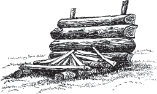

首次出版于1900年
Skyhorse Publishing首版于2015年
版权所有。未经出版商明确书面同意，不得以任何方式复制本书的任何部分，但在评论或文章中的简短摘录除外。所有咨询应发送至Skyhorse Publishing，地址：纽约州纽约市西36街307号11楼，邮编10018。
Skyhorse Publishing的图书可以批量购买，享受特别折扣，用于促销、企业礼品、筹款或教育目的。也可以根据规格定制特别版本。详情请联系特别销售部，Skyhorse Publishing，地址：纽约州纽约市西36街307号11楼，邮编10018，或发送邮件至info@skyhorsepublishing.com。
Skyhorse®和Skyhorse Publishing®是Skyhorse Publishing, Inc.®的注册商标，该公司为特拉华州公司。
访问我们的网站：www.skyhorsepublishing.com.
美国国会图书馆出版物编目数据存档。
封面设计：Rain Saukas
封面图片来源：Thinkstock
印刷版ISBN：978-1-62914-385-9
电子书ISBN：978-1-63220-242-0
美国印刷
《林地技艺》(Woodcraft)献给”户外人”(Outers)的大军，作为一本关于林地技艺的袖珍参考书。
因为砖石滋生污秽与罪恶，
伴随着跳动的邪恶脉搏；
人们在盛年之前便已枯萎，
被铺就在小巷和街道中的诅咒所困。
肺部中毒，肩膀弯曲，
在工厂和矿井令人窒息的烟雾中；
死神在挣扎的人群中徘徊——
但他避开橡树和松树的阴影。
NESSMUK
第一章
过度劳累与休闲——户外活动与户外人——如何去做，以及为何他们错过了
第二章
背包、手斧、刀具、锡器、钓竿、渔具、杂物袋
第三章
迷路——野营——艰苦还是舒适——昆虫——营地及其搭建方法
第四章
营火及其重要性——通常错误的浪费做法，以及正确的生火方法
第五章
飞蝇钓鱼与非飞蝇钓鱼——一些渔具和诱饵——关于垂钓艺术的漫谈——头灯——捕蛙
第六章
营地烹饪——通常的做法，以及关于简单烹饪的一些提示——烹饪火堆和户外炉灶
第七章
更多烹饪提示及一些简单食谱——面包、咖啡、土豆、汤、炖菜、豆类、鱼、肉、鹿肉
第八章
荒野中的十天旅行——独自前行
第九章——独木舟
轻型独木舟和双桨——不同独木舟适合不同的划船者——偏爱clinker式雪松独木舟的理由
第十章
零碎杂项——去哪里户外——为什么选择clinker式？——树枝和嫩叶
“Nessmuk”
背包和杂物袋
手斧和刀具
印第安营地
棚帐和营火
展开的棚帐
正确的营火生法
蛙饵
三钩组
G. W. 手斧
户外烹饪炉灶
不需要赫伯特·斯宾塞跨越大洋来告诉我们，我们是一个过度劳累的国家；我们的头发比英国人早十年变白；或者”我们对工作的福音已经有些过度了”，“是时候宣扬放松的福音了”。这都是真的。但我们工作更努力，在给定时间内完成更多，并且和较慢的种族一样持久。至于白发——也许白发总比没有头发好；而且事实上，普通英国人秃顶的时间和美国人头发变白的时间一样早。然而，当他说：“在我遇到的每个圈子里，都有人因工作压力而遭受神经崩溃，或者提到因过度工作而自杀、永久丧失能力，或者在努力恢复健康中浪费了很长时间的朋友”时，他的话有着悲哀的意义。太真实了。而且在十分之九的情况下，正是这种持续不断的紧张，没有放松或休息，导致神经断裂，最终导致医生所说的”神经衰竭”——类似于瘫痪——患者很少能完全康复。
斯宾塞先生引用那位古怪的老编年史家弗鲁瓦萨尔的话说：“英国人以他们的方式悲伤地享受快乐”；并认为如果他现在还活着，他会对美国人说：“他们以他们的方式匆忙地享受快乐。”也许吧。
这是一个匆忙和焦虑的时代。任何比蒸汽慢的东西都容易”被落下”。财富迅速积累又自由挥霍。几乎所有忙碌、辛勤工作的美国人都有一种直觉，意识到每年至少需要一段休息和放松的时期，而且所有人——或者说几乎所有人——都愿意慷慨地付出，事实上是过于慷慨地为任何有助于休息、娱乐和运动的事物付费。我很遗憾地说，我们大多数人都被骗了。平均而言，那些去森林、湖泊或溪流寻求健康和运动的夏季外出者，每花一美元只得到大约十美分的价值。大多数人会承认——至少对自己承认——在一个月的假期后，他们回到工作岗位时内心有一种失望和挫败的感觉。当我们有钱时，我们花钱很大方。我们在整个文明世界中以为享乐慷慨付费而闻名；但知道自己被骗了会让我们感到羞辱，而这正是我们大多数人在夏季假期结束时的感受。对于百万富翁来说，这没什么大不了的。如果他选择在北方森林度过一个夏天，他能够为船只、四轮马车和”贴身服务”慷慨付费。他不需要研究森林和溪流外出活动中的轻便和经济问题。让他的向导照顾他；他会慷慨地把财富分给他们和旅店老板。
我不是为他写作，也帮不了他什么。但有成千上万实用、有用的人，他们中的许多人远非富有；技工、艺术家、作家、商人、职员、生意人——可以说是工人——他们迫切需要并且完全应得每年至少一次的休息和放松季节。我为这些人而写，也是写给这些人的。
也许超过五十年对”林地技艺”(woodcraft)的投入，使我能够给那些在工作的封闭季节里梦想着在洪水、田野和森林边露营生活的人提供一些有用的提示和建议。
我发现，几乎所有真正热爱大自然和户外露营生活的人，都会花大量时间和精力来规划未来的旅行，或讨论过去的旅行和快乐，但这些仍然是美好的回忆。
当山间溪流冰封，北地寒风呼啸时；
当冬季风吹起苦涩的雨雪；当冬雨使户外生活无法忍受；当季节、天气和法律共同使野兽、鸟类和人类进入”封闭期”时，几个志同道合的人在某个最喜欢的聚会地点，围着发光的火炉聚集，交流故事、意见和经验，这是很好的。也许没有两个人会完全同意外出活动的最佳地点、飞蝇、鱼竿、卷线器、枪支等，或者可能讨论的其他十几个要点。但有一件事所有人都承认。每个人都带着太多的装备、太多的行李去了他选择的地方；几乎所有人使用的船只都至少比实际需要的重两倍。购买这个或那个不可或缺的露营装备的诱惑太强了，我们带着适合骡子驮运的负担去了美好的森林。这不是正确的做法。
轻装上阵；越轻越好，只要你有最简单的材料来保证健康、舒适和享受。
当然，如果你打算建立一个永久营地，并且可以乘船或马车到达，轻便就不那么重要了，尽管即使在那种情况下，也要注意不要带一堆可能证明负担大于价值的东西——只会在你出来时把它留在后面。
关于森林中的服装，关于”结实、粗糙的羊毛衣服”已经写了很多废话。你不需要粗糙的羊毛衣服。中等厚度的精细羊毛凯西米尔呢外套、背心和裤子，不要有棉质衬里。颜色，石板灰或枯叶色（两者都很好）。两件柔软、厚实的羊毛衬衫；两条精细但结实的羊毛内裤；两双结实的羊毛袜子或长袜；这些是你需要的，也是你在森林中需要的所有服装，除了帽子和靴子或绑腿。靴子最好——前提是你不要让自己被诱骗穿一双厚底长筒重靴，正如那些不懂的作家经常建议的那样。沉重的长筒靴在穿越崎岖森林的艰苦跋涉中是令人疲惫、烦人的累赘。即使是鹿皮鞋(moccasins)也更好。绑腿、各种高帮鞋，事实上，在系紧和解开方面都太麻烦了。轻便靴子最好。不是薄而不耐用的东西，而是实际重量轻的。以下提示将为森林中最好的鞋类提供一个想法；让它们是单层鞋底、单层后帮和单层前帮，除了轻便的短鞋衬。后帮用结实的”乡村小牛皮”；前帮用结实的法国小牛皮；鞋跟一英寸高，带钢钉；外部加固；鞋带窄，用精细的法国小牛皮制成，采用”跨骑式”安装，并固定到后帮顶部。外底结实，西班牙橡木，用木钉固定而不是缝制，尽管两者都很好。它们的重量将大大少于通常推荐用于森林的笨重、昂贵靴子的一半；增加的舒适度必须亲自测试才能理解。
帽子应该是精细、柔软的毡帽，帽冠适中低矮，帽檐宽阔；颜色与服装相配。
头部和脚部的适当遮盖并非小事，值得花些心思关注。务必确保靴子不要太紧，帽子不要太松。上述装备将为旅行者提供一件衬衫、一条内裤和一双袜子作为备用衣物。一个柔软温暖的毯袋，两端开口，长度刚好能盖住睡眠者，再配上一块6x8英尺的防水棉布，将在夜间提供温暖和庇护，两者合计重量为五到六磅。加上备用衣物，在搬运时需要打包的干货大约有八磅，这已经足够了。而且，这可能也是舒适所需的最低限度。
在夏末进行穿越北部荒野的独木舟之旅时，我在森林的不同地点遇到了许多队伍，他们携带的不必要装备数量简直令人震惊。为什么一个精明的商人，在向导的陪同下穿越森林，几乎每晚都在森林旅馆扎营，却要给自己背上一个装满灰色羊毛毯和橡胶毯、备用衣物、锅碗瓢盆的五配克背篓，还有一支9磅重的10号口径猎枪和两根钓竿——是的，还有一双沉重的备用靴子挂在枪上——这是我永远无法理解的事情之一。我自己的负重，包括独木舟、备用衣物、毯袋、两天的口粮、袖珍斧、钓竿和背包，从未超过26磅；而且我做好了随时随地露营的准备。
打算去森林郊游的人往往会提前很久就开始准备，并收集许多看似在营地有用和方便的零碎物品；这些东西本身都不错，但至少会造成过重的负担。更好的做法是先研究如何在不造成特别不适的情况下尽可能轻装上阵。一个好方法是在闲暇时思考这次旅行，列出一份必需品清单，提前准备好，并以方便的方式收纳，这样在需要时就不会缺少任何东西，尤其是在无法采购的时候和地方。清单会比人们想象的要长，但不必笨重或沉重。由于我通常被认为在进行巡航或长途森林徒步时携带的装备特别轻便，我将列出我随身携带的物品清单——徒步穿越搬运点或穿过森林时。
在服装方面，毯袋和遮蔽布就是所有需要描述的东西。接下来我关注的物品是背包（或背篓）、带卷线器的钓竿、钓线、鱼饵、鱼钩和所有渔具、袖珍斧、刀具和锡器。首先是背包；由于你可能要背着它走很多英里，最好从一开始就选对，并且佩戴舒适。不要被诱导去背背篓。我知道它在整个北部荒野地区都很受欢迎，在向导和运动员聚集的其他地方也被广泛使用。但我不喜欢它。我承认它可以装面包、茶、糖等而不会压扁；瓶子、陶器和其他易碎物品比放在油布背包里更安全，不易破损。但它在雨中或迎面而来的浪花中绝不防水，重量是背包的两倍多——而且越湿越重——我宁愿让面包、茶、糖等稍微压扁，也不愿让它们被水浸透。此外，值得注意的是，人类是脊椎动物，应该尊重自己的脊柱。在沉重的搬运过程中，装满的背篓总是会压在人体脊椎最脆弱的突起上。背包佩戴舒适，不会摩擦。插图中显示的这款背包形状很好；原版——我已经使用多年——在各方面都令人满意。它的容量超过半蒲式耳，可以装下毯袋、遮蔽帐篷、斧头、杂物袋、锡器、渔具、衣物和两天的口粮。空重仅十二盎司。
背包和杂物袋
插图中显示的斧头和刀具在刀具方面能够令人满意地满足需求。每一件都物有所值，尤其是斧头，它是我所见过的”双管”袖珍斧的最佳型号。在这里让我岔开话题，聊聊这把不可或缺的斧头；因为据我所知，它是最难获得完美状态的营地装备。在我十几岁之前，我就意识到一把轻便的斧头是野外生存(woodcraft)的必需品，我也发现这是最难得到的东西。我试过瓦片斧(shingling hatchets)、板条斧(lathing hatchets)和乡村五金店里能找到的小斧头，但没有一把令人满意。我让几个自称擅长制作刃具的铁匠制作了不少，这些是最糟糕的，不像地球上或地下的任何东西——看起来凶神恶煞、笨重，而且都太重，没有平衡感或比例。我打猎了十二年才找到我想要的袖珍斧。它是在罗切斯特由一位名叫布什内尔的外科器械制造商制作的。获得它花费了时间和金钱。我在一个下雨的星期六花了一天时间用木头制作模型。去罗切斯特浪费了一天，等待刀片又等了一天，为它支付了3美元，回家又损失了一天。船费1美元，开支2美元，还有三天的时间损失，另外一个下雨的星期天用来制作皮套和山核桃木手柄。
斧头和刀具
我那些机智的朋友们总是乐于帮我计算狩猎和钓鱼装备的成本，他们做了如下这份商业化的估算，并把它放在我早上一定会看到的地方。需要说明的是，参与这个小玩笑的五个人都比我更强壮、更高大，但其中四个已经去了”永远看不到太阳的地方”。我会把这份声明原样抄录下来，它已经在发黄的纸上保存了四十多年。因为我保留它已经超过四十年了。
一个林务员
借方
购买一把灵活轻便的袖珍斧：
刀片成本 $3.00
船费 1.00
3天开销 3.00
3天误工费，每天$1.25 3.75
制作模型、手柄和刀鞘2天，约 2.00
总计 $12.75
相对的，按斧头实际价值 2.00
差额 $10.75
然后他们哄堂大笑，这把斧头的成本成了一个长期笑话，也成了对我”商业能力”的嘲讽。最让我恼火的是，这些家伙的计算并没有偏离太远。而我真的错了吗？那把斧头是我近三十年来的最爱。它已经被熟练工匠”重锻”过两次；如果我的朋友”贝罗”没有弄丢它，它现在还在使用。
这些年来，我会为了省一两美元而不带它吗？但我更喜欢双刃斧。我需要一个厚实、钝的刃口来对付树节、鹿骨等，还需要一个锋利的刃口来砍伐干净的木材。
说说刀具。这些是必需品，无论是形状还是韧性都应该是最好的。通常出售的”鲍伊刀”和”狩猎刀”都是厚重、笨拙的东西，刀刃中间有一道脊，看起来很凶狠，但用处不大；更适合装饰廉价小说或”比利小子”的腰带，而不是猎人的装备。图中所示的这把刀刃薄，便于剥皮、切肉或用餐。坚固的双刃折叠刀是我迄今为止找到的最好的型号，配合鞘刀使用，完全足够野营使用。没有必要把餐具带进树林。可以用山毛榉或桦树枝即兴制作一把好叉子；用淡水贻贝壳的一半，加上一根劈开的木棍作为手柄，就能做出一把很好的勺子。
我用于烹饪和进餐的全部器具包括五件锡器。这是在固定营地停留时的情况。当巡游和徒步旅行时，我只在背包里带两件。
我让一个熟练的锡匠按以下规格制作一个器皿：底部6英寸，顶部6¾英寸，边高2英寸。底部用能买到的最厚的锡，边用较轻的锡，接缝处密封防水，不用焊料。顶部只是翻边，不用铁丝。第二个器皿制作相同，但要小到能嵌套在第一个里面，倒扣时也能作为盖子。另外两个器皿用普通压制锡器制作，顶部切掉并翻边，也不用铁丝。它们的尺寸设计使得所有器皿都能嵌套，占用的空间不比最大的器皿单独占用的多，三个较小器皿中的每一个都能完美地盖住下一个较大的器皿。另一件是锡制野营水壶，也是用最厚的锡制作，接缝防水。它能装两夸脱，其他器皿能完美地嵌套在里面，所以打包时整套器具占用的空间正好和水壶单独占用的一样多。我应该提到，坚固的耳朵安装在水壶边缘下方，提梁落在外面，因为没有一个器皿有任何手柄，所以没有恼人的”突出物”会磨损和擦伤。这套紧凑的器具总共重两磅。我遇到过北方森林里的一些队伍，他们的一个煎锅就比这重——加上三英尺长的手柄。他们是怎么带着这样一个可怕的烹饪工具穿过灌木丛的？
只有当我去一个非常容易到达的营地时，我才会带多达五件锡器。我曾经徒步穿越一片未开发的荒野十天，我带的全部器皿就是一个十美分的锡罐；这就够了。我想在讲完之前我会讲讲那次徒步旅行的故事。因为我在那十天里看到的猎物比我以前或以后任何一个季节看到的都多；而且我听说整个地区现在是一个繁荣的农业区，鹿几乎都消失了。三十九年前的这个月，它们还很多。
在谈论钓竿时，我比谈论与户外运动相关的任何其他事情都更犹豫。钓竿和制造商的数量和种类；鳟鱼和飞钓”狂热者”的热情；钓鱼对我来说并不优先于所有其他运动这一事实，以及我不得不承认的令人羞愧的事实——我并不排斥鹿尾旋转饵、蠕虫和铅坠、鱼尾和白色幼虫——这些都让我不得不简短一些。
但是，由于我一生都是渔夫，从我用别针钩钓鱼的日子到现在；由于我已经相当全面地尝试过，从溪流小鱼到100磅重的长鳍金枪鱼，我对钓竿及其使用发表一些评论或许可以得到原谅。
一根钓竿可能是一件非常高档、价格昂贵的美学玩物，售价50到75美元，或者它可能只是——一根钓竿。从一流制造商那里可以用更少的钱买到实用且平衡极佳的钓竿。有钱人尽可以满足自己对最昂贵钓竿的喜好。他可能会做得更糟。一个收入有限的实用型日常运动员会发现，更实惠的产品同样能将他的假蝇优雅地落在水面上，吸引Salmo fontinalis（溪红点鲑）。我那根8½英尺长、4¾盎司重的小竹节竿是Forest and Stream（森林与溪流）杂志的编辑为我定制的，花费了10美元。我对它使用得很粗暴，有时大鳟鱼会严重考验它，但它从未让我失望。我的第二根钓竿尺寸为9½英尺长，重5¾盎司。当其他方法都失败时，这根钓竿可以操控我用来钓鳟鱼和鲈鱼的鹿尾旋转饵(bucktail spinners)。我在阿迪朗达克(Adirondack)和西部水域使用这种规格的钓竿度过了几个夏天。它有手工制作的绕线轮座，玛瑙第一导环，各方面都令人满意，而且在平衡性、动作和外观上，我看不出它与我一位朋友炫耀的那根25美元的钓竿有什么优越之处。查尔斯·达德利·华纳(Charles Dudley Warner)对森林生活的描写极具魅力，他关于鳟鱼垂钓有以下幽默精妙的论述，值得重复：
“众所周知，任何在意自己声誉的人都只会用假蝇钓鳟鱼。这需要对鳟鱼进行一些训练才能接受这种方法。人迹罕至水域中未开化的鳟鱼更喜欢鱼饵；而那些垂钓唯一目的似乎就是捕鱼的乡村人，会纵容它们处于原始状态使用蠕虫。然而，没有运动员会使用假蝇以外的东西——除非他碰巧独自一人。”谈到钓竿时，他说：“这根钓竿是重7盎司的竹竿，每次使用时都必须用丝线缠绕拼接。这是一个繁琐的过程；但通过这种方式固定接头，可以确保钓竿的弹性均匀。任何致力于高雅艺术的人都不会考虑使用套筒接头。”
一个夏天，在北方荒野(Northern Wilderness)为期七周的旅行中，我唯一的钓竿是一根7½英尺的亨肖尔竿(Henshall)。它到手时只有两个鱼饵竿梢；但我加了一个假蝇竿梢，它就成了一根出色的”通用钓竿”。用它我可以对付大鲈鱼或梭子鱼；它是钓溪鳟的上佳鱼饵竿；作为假蝇竿它也让我非常满意。它很可能会再次陪我出行。对于绕线轮抛投，5½英尺的钓竿更方便。但目前还没有定论哪种最好，我让每个人保留自己的意见。只是，我认为一根钓竿就够了，但我总是有更多。
不要忘记带上水手们所说的”杂物袋”(ditty-bag)。这可能是一个约4英寸宽、6英寸长的小羊皮袋。我写这篇文章时，我的杂物袋就在面前。倒出里面的东西，我发现清单如下：十几个鱼钩，尺寸从小鲦鱼钩到大利默里克钩(Limericks)不等；四根各六码长的钓线，从最细的到足以钓十磅鱼的粗细不等；三根织补针和几根普通缝纫针；十几颗纽扣；缝纫丝线；线，以及一小团用于织补袜子的结实纱线；粘贴膏药；一点鞋匠蜡；蜂蜡；铅坠，以及一把用于磨钩的非常细的锉刀。杂物袋连同内容物重2½盎司；它装在一个小鹿皮子弹袋里，我几乎像戴帽子一样经常佩戴它。这个袋子背面缝有一个坚固的刀鞘，轻便的狩猎刀总是随手可得，它还装有一瓶两盎司的驱虫药水，一瓶”止痛药”，以及两三组黄铜线钩串——关于这些，我会在别处详述。我总能从那个袋子里掏出防水火柴盒、绳子、指南针、亚麻布和猩红法兰绒碎片(用于钓蛙)、铜钉和其他轻便杂物。它是我携带的最方便的森林装备之一。
我希望假蝇竿的美学爱好者不会因为我承认对钓蛙有偏好而厌恶地放下这本书。我承认这不是高雅的运动；但我从中得到了很多乐趣。一只大蛙在同一个诱饵上被钩住几次后，仍会执着地扑向一块红色法兰绒，以及它每次被放开后以一连串短促跳跃滑稽地逃走的样子；每次较量后，它会愉快地调好它那低沉的男低音管——准备再次贪婪地扑向朱鹭蝇(ibis fly)或红布——这相当有趣。而且它的后腿裹上面粉煎至金黄，比鳟鱼或鹿肉更美味。
对于绝大多数未来的旅游者和户外爱好者来说，“野外露营”(camping out)是夏季假期的主要因素。在漫长的冬季月份里，他们倾向于三五成群地聚在一起，大谈营地、钓鱼、狩猎和”艰苦生活”(roughing it)。最后这个短语非常流行，总是在关于森林度假的谈话中冒出来。我不喜欢这个短语。我们去绿色森林和清澈水域不是为了艰苦生活，我们去是为了舒适生活(smooth it)。我们在家里已经够艰苦了；在城镇和城市里；在车间、办公室、商店、银行——无论我们身处何处——总是需要准时并完成工作；需要供养依赖我们的人；需要跟上、赶上，否则就会被落下。“唉，为了终生的战斗，其最勇敢的口号就是面包。”
至于那些幸运的少数人，他们无需参与任何纷争或斗争，不仅拥有所有的时间，而且还有大量无法令自己或他人满意地处理的时间——我不是为他们而写；我只为那些每年夏天去或想去森林的劳动者们而写。对于这些人，我想说，不要粗糙地对待它；要让它尽可能平滑、宁静和愉快。
为此，你需要愉快的白天和平静的夜晚。你不能让自己被昆虫折磨和毒害，也不能因寒冷和潮湿而彻夜难眠，更不能因艰苦的徒步和沉重的负荷而耗尽体力。放轻松，始终保持冷静。十个人中有九个，在发现自己在森林中迷路时，会陷入恐慌，并与指南针争论。千万不要那样做。指南针总是对的，或者几乎是对的。不过几年前，一个身强力壮的人——当然是运动员——在北方森林中迷了路，并且如预料的那样惊慌失措。他装备精良，足以在森林中生存一周。本应只是一次有趣的冒险，却变成了一场悲剧。他在毫无意义的恐慌中穿过灌木丛和沼泽，直到因恐惧、饥饿和精疲力竭而倒下死去。
有一个经过充分证实的故事，讲述了奥斯威加奇(Oswegatchie)地区的一位向导以同样的方式丧生。向导并非万无一失；我知道不止一个向导迷过路。因此，如果你在阴天穿越一片无路的森林，而太阳突然在中午时分从西北方的云层下破云而出，不要惊慌。末日并未来临，行星也没有混乱；只是你转向了。你已经逐渐转了方向，直到你面向西北方，而你本想向南行进。这对心智有一种混乱的影响——在森林中迷路。但是，如果你能集中和整理你的大脑灰质，并抑制所有恐慌的感觉，这是很容易应对的。例如；几乎可以肯定的是，你开始向西南偏转，然后向西，再到西北。如果你继续前进直到正对北方，你可以简单地沿着正南方向纠正你的路线。但是，由于你已经偏离了八分之三圈，设置你的指南针并向东南方向行进，直到你判断已经大致弥补了偏差；然后直接向南走，你就不会错得太远。把指南针拿在手里，每隔几分钟看一次；因为一旦一个人迷路，偏离直线路线的倾向——而且几乎总是向右偏——是一件难以理解的事情。
关于有毒昆虫，可以说，对于皮肤干净、白皙、娇嫩的人来说，它们在一开始是一种难以忍受的折磨。没有人能在脸部刺痛、灼烧、肿胀的情况下享受生活，而对每一寸暴露皮肤的攻击都是持续不断的。我见过一个年轻人在暴露于这些害虫两天后从森林中出来，一只眼睛完全闭上，眉毛像蛤壳一样悬在上面，而脸和手因炎症和浮肿几乎变得丑陋不堪。圣雷吉斯(St. Regis)和圣弗朗西斯(St. Francis)的印第安人，虽然在森林中出生和长大，但绝不会轻视黑蝇(black fly)。
那个能够射击幻影瀑布(Phantom Falls)的人发现，“它的叮咬并不严重，通常也没有毒性。这条规则可能偶尔有例外；但与蚊子的叮咬相比，它相对温和且无害。”还有：“蚋……在我看来，比黑蝇或蚊子要糟糕得多。”默里(Murray)如是说。我们的观察有所不同。一千只蚊子和同样多的蚋可以叮咬我而不留下痕迹，除了它们工作时叮咬的疼痛外没有任何影响。但黑蝇的每一次叮咬都会形成一个单独而明显的疖子，两个月内都不会愈合。
去年七月在穆斯河(Moose River)钓溪鳟(brook trout)时，我遇到了一群黑蝇，被严重叮咬。我粗心地把药留在了后面。到十月一日，叮咬处仍然疼痛，三个月后才完全消失。弗兰克·福雷斯特(Frank Forester)在他的《鱼与垂钓》(Fish and Fishing)第371页中说，他从未钓过汉密尔顿县(Hamilton county)的红肉鳟鱼，“因为害怕夏季垂钓者的诅咒——黑蝇，它对我来说特别有毒。”
“阿迪朗达克·默里”(Adirondack Murray)给出了详细的指导，通过使用鹿皮手套配羚羊皮护手、瑞士薄纱、细平纹布等来击败这些小害虫。然后他建议使用甜油和焦油的混合物，涂抹在脸和手上；他补充说，它很容易洗掉，使皮肤像婴儿一样柔软光滑；所有这些都是真的。但是，在森林中超过四十年的经验告诉我，以下配方在任何地方都是万无一失的，无论是sancudos、moquims，还是我们自己的有毒昆虫最多的地方。
它于1880年夏天在《森林与溪流》上发表，并在1883年再次发表。它被广泛引用和采用，我从未见过它失效：三盎司松焦油，两盎司蓖麻油，一盎司薄荷油。用文火慢炖，装瓶备用。一个季节你几乎不需要超过两盎司的小瓶。一盎司在树林里够我用六周。一开始要彻底且大量地涂抹，当你建立起良好的光泽层后，每天少量补充就足够了。在昆虫多的地方不要用肥皂和毛巾。这种清漆的良好保护层保持得越久效果越好——而且它干净卫生。如果你在营火旁把脸和手弄脏了，用手帕角沾湿擦掉，别忘了在清洁过的地方立即涂上清漆。去年夏天，我在背包里带着一块肥皂和一条毛巾穿越北方森林进行了七周的旅行，一次也没用过。当我在皮肤上建立起良好的光泽层后，它太宝贵了，不能为任何与肥皂和水有关的软弱念头而牺牲。当我到达林地旅馆时，我发现肥皂和毛巾多得很。我发现这种混合物让人的脸呈现出红润的晒黑外观，被认为是健康和强壮肌肉的标志。在公共洗脸池里彻底清洗会减淡颜色，但会让皮肤非常柔软光滑；事实上，作为皮肤乳液它非常出色。对于已经被咬的有毒伤口，它是一种舒缓和治愈的涂抹剂。
我在昆虫问题上花了一些篇幅，但不超过它应得或需要的。这些恶毒的小家伙足够重要，能够破坏许多精心策划的树林之旅，最好从一开始就击败它们。你会发现免受昆虫侵扰和舒适的营地是树林郊游的两个首要且最不可或缺的条件。就在这里，我将简要讲述我的一位年轻朋友大约二十五年前如何去树林的故事。他是一名银行职员，而且是个好人，倾向于露营生活。
几个月来，每当我们见面时，他都会介绍他最喜欢的话题：钓鱼、露营等等。最后在最热的月份，时机到了。他出现时头发剪得很短，戴着一顶硬质小草帽，皮肤柔软，因长期在封闭的办公室里而变得苍白。我觉得他看起来有点娇嫩；但他很乐观。他能吃苦，能睡在光秃秃的地上，用树根当枕头；至于蚊子和蠓虫(punkies)，他从不在意它们。
我们一行五人——两个老猎人和三个年轻人，后者起初都充满热情和勇气。在艰苦的八英里跋涉快结束时，他们变得沉默，紧张地拍打和抓挠。到达露营地点后，他们干得还不错，但明显有点虚弱。到我们准备就寝时，他们已经相当沉默和痛苦了——尤其是银行职员让·L。蠓虫渴望他娇嫩的皮肤，对他来说它们是剧毒的。他用毯子蒙住头试图入睡，但只取得了部分成功。当他通过让自己窒息而从昆虫叮咬中获得一点缓解时，总有树桩和多节的树根不断戳进他的肋骨，或者扎进他的脊椎。
我经常有机会观察到，树桩、树根和小石头等对不习惯树林的人的身体有一种反常的磨损倾向。我相信C·D·华纳先生也注意到了同样的事情。
总的来说，让和其他年轻人表现得很好。尽管他们早上起来时脸红肿，眼睛半闭，但他们都去钓鳟鱼了，一共钓到了大约150条小鳟鱼。他们尽了最大努力让这成为一件快乐的事；但让试图守候鹿舔盐地(deerlick)时，因突然下起阵雨而被淋湿；阵雨把附近所有的蠓虫和蚊子都赶到我们的屋顶下避雨。我从未见过它们如此密集或更糟。让屈服了，用我的”蠓虫药”彻底涂抹了他的皮肤，正如他所说的；但为时已晚；伤害已经造成。第二次尝试对那些年轻人来说比第一次更糟。更多的昆虫。更多的树桩和节疤。由于这些小烦恼，他们比朋友们预期的提前几天到家了——在营地留下了足够老赛尔和作者吃整整一周的口粮。其中的寓意是，如果他们在去树林之前做好准备，这次旅行本来会是一种乐趣而不是痛苦。
我要提到另一个小烦恼，这是露营者中常见的情况；这就是缺少枕头。我想我和人们一起露营过五十次，他们在就寝时，会扭动很长时间，试图让头休息。靴子是最常见的办法。但是，当你把一个靴筒——或两个——放在头下时，它们会塌陷，形成不到半英寸厚的头枕。为什么人们从来没有想到在靴筒里填充苔藓、树叶或铁杉枝叶会让靴筒鼓起来，做成一个还算过得去的枕头，这是我无法回答的另一个难题。但还有另一种更好的方法来制作露营用枕头，我将在后面描述。
现在我想专门讨论林地技艺(Bushcraft)中最重要的辅助设施之一，即营地；如何搭建营地，以及如何让营地舒适。营地有很多种类型。北方森林中有些营地实际上是精美的别墅，造价数千美元，还有原木房屋、棚屋、树皮营地、A型帐篷、围墙帐篷、遮蔽帐篷和棚屋帐篷。但是，我认为最适合普通户外爱好者需求的营地，应该是结合了干燥、轻便、便携、经济实惠等基本要素，并且易于快速搭建的营地。另一个必要条件是，营地前方必须能够昼夜生起明亮的篝火。我将简要介绍我发现最便捷和最实用的森林庇护所（营地）。
首先，我要提到一种在运动员报纸上描述过的营地类型，此后被广泛引用和使用。它的搭建方法是在两棵相邻的树之间固定一根水平杆，然后铺上厚厚的铁杉树枝，当然要将树枝尖端朝下像铺瓦片一样叠放。在其中一棵树的根部生火。如果有足够的树枝，这种营地可以抵挡相当大的雨，但它只是一个潮湿的凉亭，严格来说算不上真正的营地。森林营地应该始终能在前方生起明亮的篝火，上方有斜顶或棚顶来反射火光和热量到下方的铺位上。任何达不到这个标准的营地，都缺乏温暖、明亮和健康的必要条件。这就是我不使用任何封闭式帆布帐篷的原因。
所有营地中最简单、最原始的是”印第安营地”。它易于快速搭建，温暖舒适，正确搭建后能抵挡相当大的雨。搭建方法如下：假设你外出时稍微迷了路。渐暗的天色警告你夜幕即将降临。你不是新手。你知道在漫长寒冷的十一月夜晚，一个休息的地方对健康和舒适至关重要。你沿着第一个小山谷往下走，直到找到一条小溪，因为水是首要必需品。当你拔出手斧时，你一眼就看清了整个情况。小溪以半堵塞半冰冻的方式向下潺潺流淌。有一棵巨大的湿透的铁杉横卧在溪上。手斧轻轻一砍就知道可以剥皮。周围有很多较小的树木；细长的杆子，顶部有一簇树叶。五分钟就足够砍倒其中一棵，从中切下一根十二英尺长的杆子，将杆子两端削尖，一端插入地面，另一端插入一棵粗糙的铁杉树干上，这样你的横梁就搭好了。现在去——带着你的手斧——找附近最茂密、最合适的年轻铁杉树。砍倒它们并迅速拖到营地。接下来，你需要生火。倒下的铁杉上有五十根坚硬的树脂枝条伸出来；砍下其中几根，把最大的劈成火柴大小的木条；把碎片削成刨花，从你预定的火堆处清除湿树叶，然后在裤子的臀部位置划火柴。如果你是林地老手，你只需要划一根。开始时慢慢添柴；火势会迅速增强。当你有了十英尺高的火焰时，看看你的手表。现在是下午6点。你不想在10点之前就睡觉，睡前还有四个小时要打发。现在，处理那棵老铁杉；砍下每根干枝，然后剥下树皮带到营地。你会发现这需要一个小时或更长时间。
印第安营地
接下来，剥掉年轻铁杉的每根树枝，像铺瓦片一样把它们铺在横梁上。这将形成一种类似熊窝的结构，非常适合让你度过一个舒适的夜晚。明亮的篝火很快会烘干将成为你床铺的地面，你将有足够的时间再砍倒一棵小铁杉，铺上一英尺厚的树枝床。你这样做了。然后你制作枕头。这个枕头对舒适至关重要，而且非常简单。它是半码长的细布，缝成袋子，里面填充苔藓或铁杉树枝。你可以倒空它并放进口袋，它占用的空间大约相当于一块手帕。你还有其他小细布袋——如果你够聪明的话。一个装着几盎司好茶；另一个装糖；还有一个用来放你的零碎物品：钱、火柴盒、小刀。你有一块黄油和一点猪肉，还有一大片黑面包；睡觉前你泡一杯茶，烤一片猪肉，享用一顿便餐。
十点到了。时间过得并不乏味。你温暖、干燥、吃得饱饱的。你的老朋友猫头鹰来到火光附近，用它们奇特的野性叫声向你致意；远处的狐狸发出奇怪的吠叫声，然后你躺下休息。还没准备好睡觉。
但你睡着了；凌晨两点时你醒来，感到寒冷和黑暗。火已经烧得很低，雪正在飘落。猫头鹰已经离开，深沉的寂静笼罩着寒冷、静止的森林。你把火拨旺，当明亮的光线照到你森林窝棚的最深处时，拿出小烟斗，把一块海军烟丝切碎。烟雾懒洋洋地向上飘；火让你温暖而困倦，你再次躺下——再次醒来时感到寒冷——发现火已经烧得很低，天快亮了。你睡得比在家里自己房间还好。你睡在一个”印第安营地”里。
你也学会了这种简单庇护所与在树下或老木头旁露天露营之间的区别。
另一种容易搭建且非常舒适的营地是”灌木棚”，在宾夕法尼亚州北部通常这样称呼。这种棚子的框架是一根横杆，架在两个约六英尺高的叉杆上，再加上足够的直杆作为茅草顶的基础。这些杆子间隔约六英寸放置，一端在地面上，另一端在横杆上，形成一个相当陡的角度。茅草是用从茂盛的小铁杉树上砍下的扇形树枝制成的，铺设时要底部朝上、羽毛端朝下。从地面开始铺设，一直铺到横杆处，像铺瓦片一样仔细地叠放。如果茅草铺设厚度达到一英尺，并且做得好，这个棚子能够抵挡相当大的雨——比一般的树皮屋顶要好，因为树皮屋顶只有在干燥天气才防雨。
然而，如果你在容易找到云杉或香脂冷杉的地方露营，并且是在树皮容易”剥离”的炎热月份，而你又有一天时间来搭建营地，那么树皮营地可以是一个非常整洁的林间住所。我见过最好的树皮营地是在阿迪朗达克山区。其中一些建造得相当精致，需要两个或更多向导辛苦劳作两天以上。如果停留时间很长，营地是永久性的，也许这样做是值得的。
我试过的最好的营地——也许是最好的——是插图中显示的”棚帐”。它容易搭建，舒适、整洁，而且绝对防雨。当然，它可以是任何所需的尺寸；但对于两人队伍，以下尺寸和说明就足够了：
首先是屋顶。这只是一块9英尺长、4或4.5英尺宽的结实棉布。侧面用相同的材料，前端深4.5英尺，后端深2英尺。这样屋顶边缘有7英尺长，后端留出2英尺用于折叠。可以看出，侧面必须”斜裁”，以补偿屋顶的角度，否则棚子搭起来就不会方正整齐。考虑到裁剪时的损耗，每侧需要近3码的布料。制作时唯一需要的工作就是将侧面裁成合适的形状，并将它们缝到屋顶上。不需要纽扣、绳子或环扣。布料甚至不需要缝边。但是，它确实需要一些防水处理；以下配方效果很好，而且几乎不会增加重量：在10夸脱水中加入10盎司石灰和4盎司明矾；静置至澄清；将布料紧密折叠放入另一个容器中，倒入溶液，浸泡12小时；然后用温热的雨水冲洗，在阳光下拉伸晾干，棚帐就可以使用了。
要正确搭建它，需要制作一个整洁的框架，步骤如下：前端用两根结实的木桩或柱子，牢固地钉入地面，相距4.5英尺；在距离这两根柱子6英尺10英寸的地方，再钉入另外两根柱子——这两根相距4英尺——作为棚子的后端。前柱高4.5英尺，后柱只有2英尺高。前柱在上部还要稍微向内倾斜，这样从柱子外侧测量，顶部正好是4英尺。这样在棚子前端提供了更多宽度，增加了空间和温暖。搭建棚帐时不使用叉杆。四根柱子的顶部都要加工成能够接纳平端横杆，并便于钉钉子。当柱子排列整齐并钉好后，选择两根笔直的硬木杆，直径2英寸，长7英尺——或稍长一些。仔细准确地削平两端，将它们并排放在柱子顶部，从一根柱子到另一根柱子，在每端用一颗轻钉子固定。现在，再选择两根相同尺寸但稍长于4英尺的笔直木杆；像之前那样削平这些杆子的两端，将它们横向放置，从一侧到另一侧，与另外两根杆子的端部重叠；通过将一颗六便士钉子穿过端部钉入柱子来牢固固定，这样你就有了一个7x4英尺的方形框架。但它还没有完成。需要三根轻杆作为椽子(rafter)。这些要沿着屋顶长度方向等距放置，并用钉子或绳子固定到位。然后取两根稍长于7英尺的直杆，直径约3英寸。这些杆子的两端要准确削平，钉在柱子底部，紧贴地面，在柱子外侧。脚木和头木是必不可少的。这些应该直径约5英寸，长度正好能从柱子外侧到外侧。它们的端部应该削方，脚木放在前柱外侧，用两个木钉牢固固定。头木以同样的方式固定，只是它要靠在后柱的内侧；框架就完成了。用刀和斧头削圆所有尖角或棱角，然后开始铺设和固定布料。均匀地铺上屋顶，用大约十几颗六盎司的钉子准确地将它钉在前横杆上。将布料拉伸到位，以同样的方式在后端钉好。横向拉伸，将侧面钉在前后的侧杆上。将侧面的前后端钉在前后柱子上。将屋顶后端的2英尺折边拉下来；拉紧，将它牢固地钉在后柱上——你的林间小屋就完成了。它防雨、防风、温暖舒适。脚木和头木界定了你森林住所的范围；在其中你可以随意堆放芳香的铁杉枝叶，想铺多厚就铺多厚，并且每天更换。这是完美的营地。
你可以用更少的精力和劳动来搭建它，也能用得很好。但我试图解释如何以最好的方式来做；使它足以应付整个季节。而且在纸上讲述它比实际操作要花更长时间。
当我和伙伴一起去树林时，到达营地后，我喜欢让他准备好钓鱼装备，带着他最喜欢的假蝇(flies)出发，享受半天的垂钓时光，而我则按照自己的丛林技艺(wood-craft)理念来搭建营地。如果他能在黄昏时分带着几磅鳟鱼回来，我会为他准备好一个舒适的营地和明亮的篝火。如果他在冰冷的溪流中涉水的乐趣超过了我搭建营地的乐趣——那他就度过了美好的一天。
也许说明一下并不多余：按照上述方式搭建的营地需要十五根木材、支柱、杆子等，一些木瓦钉、一些六便士锻铁钉，以及一包六盎司的平头钉(tacks)。钉子和平头钉总重约五盎司，而且总是很有用。在钉布料时，将毛边向内折叠直到有四层厚，因为单层容易撕裂。如果你想拆除营地，大约需要十分钟来拔出并保存所有钉子和平头钉，将布料整齐折叠，然后把所有东西放进背包。如果你想在十五分钟内搭起一个遮蔽帐篷，像搭建印第安营地那样砍削一根十二英尺长的杆子，将一端插入地面，另一端靠在一棵大树的粗糙树皮上——铁杉(hemlock)最好——把布料挂在杆子上，将两侧固定在横杆上，再用倒置的叉状木桩将横杆固定在地面上，你的遮蔽帐篷就可以钻进去了。
上述关于棚屋帐篷(shanty-tent)的描述可能看起来有点详细，但我希望它是清楚的。整个装置重三磅，一个熟练的林地工作者需要大约三个小时的轻松工作才能将它搭建成所描述的样子。省略一些工作，只是尽可能快地将它搭成方正的形状，我可以在一个小时内完成。插图中相当准确地展示了棚屋应有的样子。布料展开时的形状如第26页的图表所示。总的来说，这是我发现的最好的封闭式帐篷形式。它允许在前面生起明亮的篝火，没有篝火的森林营地对我来说根本就不算营地。我在封闭、黑暗、阴冷、潮湿的帐篷里受够了苦。
棚屋帐篷和营地篝火
三十多年前，我开始厌恶那些以各种不同形式出现的笨重、别扭、不舒适的所谓营地。渐渐地，我开始研究”野外露营”。如果我要描述所有尝试过的不同样式和形式，会花费太多时间和篇幅。但我会提到一些最好的和最差的。
古老的东北部”煤炭小屋(coal cabin)“体现了印第安营地的原理。框架只是两根牢固的叉状木桩，相距八英尺牢固地插在地面上，顶部相互咬合。它们支撑着一根十五英尺长的坚硬横梁(ridge-pole)，小端削尖并插入地面。废弃的木板、板条箱、木桩等从横梁密集地铺到地面；上面铺一层厚厚的稻草，然后整个覆盖一英尺厚的泥土和草皮，充分压实。后面和两侧五英尺高的石墙构成了一个极好的壁炉；这些小屋防风防雨且温暖，即使在零度天气下也是如此。但它们太笨重了，对于普通的猎人和垂钓者来说需要太多劳动。而且，它们还有一个缺点，虽然前面足够宽敞，但在远端却收缩成一个阴暗、寒冷的尖顶。然而，回想起我与烧炭工人度过的许多愉快的冬夜，我买了一些油布，按照同样的原理搭建。这是一次部分成功的尝试，我用了一个季节。但那个寒冷、尖顶、黑暗的空间总是在我脑后，感觉像一座冰山。我徒劳地在头上系一条手帕，或者套上一只袜筒。那个可怜的、冰冷的角落总是在那里。而且它只能容纳一个人。当冬天把我赶出树林时，我把它送给了一位热情的年轻朋友，又买了一些油布，开始制作一个意在完美的棚屋帐篷。我花了许多闲暇时间裁剪和缝制那个棚屋，结果相当成功。它为7x4英尺的空间提供了完美的遮蔽，但携带起来有点重，而且釉面很快就开始开裂和剥落。我用坚固的帆布制作了另一个更大的，浸泡在石灰水和明矾中；如果在框架上正确搭建，这就是所能要求的一切。但是，由于侧面和末端都缝在顶部，当需要快速搭建遮蔽物时使用起来不方便。所以我把侧面后端从顶篷上拆开，展开后如图表所示。这样更好；当需要快速搭建某种遮蔽物时，可以像印第安营地那样用一根杆子完成，将帐篷横放在杆子上，用几个平头钉将其固定在侧面和中心。这可以在十分钟内完成，并制作出一个能抵挡数小时大雨的遮蔽帐篷。
总的来说，对于各种天气，棚屋帐篷可能是在同等费用和麻烦下能获得的最好的营地样式。
然而，对于夏令营来说，我最终还是更喜欢简单的单坡棚或棚顶。它是所有露营布料装置中最轻、最简单、最便宜的，我发现它足以应对从六月到落叶时节的所有天气。它只是一块9x7英尺的结实棉布，像其他布料一样浸泡在石灰和明矾水中。制作它唯一的工作就是将两幅床单布缝在一起。它不需要卷边、镶边、环扣或纽扣，只需像刷木棚那样在框架上拉伸，用钉子固定即可。我用了两季的那块布料花了六十美分，重2¼磅。它可以为三人团队提供良好的庇护所；如果在凉爽的夜晚发现有点太通风，可以在两侧打入轻便的木桩，编织铁杉树枝作为侧板，就能形成足够的挡风墙。
最后，无论你选择使用什么样的布料结构作为营地，在生营火之前，一定要用绿色树枝覆盖屋顶作为屏障。因为营地里通常会有一个家伙喜欢往火里扔腐朽的枯木和灌木丛，只是为了看火焰燃烧的乐趣和向上飞舞的火花；却忘记了燃烧的余烬也容易向下落在帐篷顶上，烧出洞来。
我已经谈到了一些我所知道的最好的营地。最糟糕的是A型帐篷和墙式帐篷，以及所有封闭式营地，在这些营地里，人们在睡眠时间必须把自己关在潮湿和黑暗中，完全与营火那令人愉快、有益健康的光和温暖隔绝。
温暖干燥的营地几乎是最重要的，其次就是营火。事实上，森林营地的温暖、干燥和健康程度主要取决于火的管理和维护方式。没有哮喘或肺结核患者能通过住在封闭潮湿的帐篷里恢复健康。我曾经和费城的一个团队在墙式帐篷里露营了一周，当时天气很冷。我们有一个叫做营地炉的小铁皮恶魔。当喂饱树皮、木节和木片后，它会烧得通红，天知道，能散发出足够的热量。等我们睡熟时，它就会熄灭；然后我们很快就会被冻醒，牙齿打颤，再次点燃它，抽根烟，喝一口酒，再睡一觉——然后又被冻醒。这远不如开放式营地和明亮的火堆。五十年的经验使我确信，病人从露营生活中获得的很大一部分益处归功于开放式营地和管理良好的营火。而后者通常的处理方式太令人遗憾、太浪费了；简而言之，搞得一团糟。比如说。
1881年夏天，我正在北部荒野进行独木舟之旅，由于拉凯特湖是北部森林中最大、最有趣的湖泊之一，我花了大约一周时间划船、钓鱼等。我在埃德·贝内特的林地旅馆”铁杉树下”安营扎寨。由于旅馆里挤满了被蠓虫和蚊子咬得痛苦不堪的男人、女人和哭泣的孩子，我选择在一个制作精良的树皮棚里铺开毯子，一块黑白招牌上写着”向导营地”。
这个营地是一个非常受欢迎的地方。每天晚上，当夜幕降临在森林和湖泊上时，旅馆的客人们就会聚集在这里，躺在新鲜的香脂冷杉枝床上，聊天、唱歌，享受巨大的营火。
没有哪家林地旅馆能长期保持受欢迎，如果它不维持一堆明亮、欢快的户外火堆的话。对于一个老林务员来说，有趣的是——注意到他们围着火堆的行为就像一群小学生。埃德·贝内特雇了一个人，一个北部森林的捕猎者，他的主要工作是为向导营地提供充足的木柴，并在每天日落前生起一堆好火。随着天色渐暗，火焰越烧越高越亮，客人们开始陆续到来；每个男人、女人和孩子似乎都把在进入营地前在火边停下来，添上一两根木柴，视为一种宗教义务。木柴被纵向、横向或以任何方式扔进去，只要能燃烧就行，就像一群男孩在村庄广场上生篝火一样。显然，目的是在最短的时间内把木柴烧完。
当火势在午夜时分减弱时，客人们会漫步回旅馆；而一直不耐烦地等待着的向导们会整理剩下的火堆，把自己裹在毯子里，然后睡觉。我向那个捕猎者建议，他和我按照应该的方式生一次火，也许他们会效仿——这样可以节省一半的燃料，还能有更好的火堆。但他说：“不行；他们喜欢生篝火，’埃德’能承受木柴的消耗，因为最好让他们按自己的方式来。时间对他们来说似乎很难打发——而且他们付钱很爽快。”夏季寄宿者、游客和运动爱好者，并不是唯一知道如何把营火生得一团糟的人。
三十五年前，当我第一次来到宾夕法尼亚州北部时，我发现猎物相当丰富。由于我想了解鹿最多的地区，我自然而然地与当地猎人打成一片。他们都是好人，但也很自负，就像所有当地猎人和垂钓者容易表现的那样。他们是天生的强壮、优秀的猎人和伐木工，往往把任何外来者都看作是新手(tenderfoot)。他们生营火的方式一直让我感到烦恼。他们总是坚持在营地里备有一把锋利的重斧头，到了傍晚，某个强壮的伐木工会砍下八到十根原木，重到需要全队人用撬棍才能搬到营地。原木的大小与营地里的人力成正比。如果有六到八个人，原木就会比我们只有三四个人时重两倍。就在天黑时，他们会在营地前堆起一堆原木，用树皮、树节和小树枝塞满缝隙。接下来的两个小时里，人们几乎无法靠近火堆点烟斗。但火势虽慢却稳。到晚上10点或11点，火会烧到前面，营地就会变得温暖明亮。队伍会钻进被窝，一群疲惫的猎人会陷入沉睡——持续两三个小时。到那时，靠近中间的某个家伙肯定会恶狠狠地甩开毯子，冲出营地，喊道：“我的天啊！我受不了了，这简直是个烤炉。”
另一个打鼾者（半醒状态）——“呼噜噜，咕噜，呃。你不能——把火——弄小点吗？”
第一个说话的人——“弄小个鬼。如果你想把火弄小，起来帮忙把这些原木扔掉几根。”
另一个人（在棚屋最冷的角落）——“你们这些家伙怎么了？最好出去在雪地里凉快凉快。棚屋够舒服的。”
他的少数派意见被忽视了。营地被烤得受不了。强壮的手和撬棍从前面撬出两根发光的原木，换上两根冰冷的绿色原木。营地冷却下来，队伍再次钻进毯子——早上5点再次起床，开始准备早餐。火的状态不适合烹饪，热量主要在后面，恰恰是不需要的地方。少数几个足够平整可以放锅或平底锅的地方又太热。简而言之，哪里有火，哪里就火太大。一个人极度厌恶地看到他的咖啡壶嘴掉进火里。他鲁莽地抓住想救他的咖啡，结果拿到的只是壶把，而壶把刚好挂住足以打翻咖啡壶。
“老艾尔”正在一堆能融化枪管的炭火上煎一片猪肉，他发出一阵大笑，但笑声被猪油的蓝色闪光和爆炸打断，差点弄瞎了他的眼睛。而作者正以十足的乐趣和欢笑精神看着这些小事故，突然被惊醒和沉默了，因为他看到自己的鹿肉牛排从”煎肉棍”的末端掉下来，消失在两根发光的原木之间。不过，队伍还是设法在天亮时吃饱肚子出发打猎。也许这些热闹的欢笑足以弥补这些小事故。
这是题外话。但我想起了许多在营地和营火旁度过的夜晚，几乎就像上面描述的那样。今天我还能微笑着回忆起那个时代的老猎人们那种平静、优越的样子，当我冒昧地建议用一半的燃料和不到一半的劳动就能生出更好的火时，他们会像从高大铁杉树的上层树枝上俯视我一样。他们会和蔼地说：“哦，你是波士顿来的孩子。你习惯了每根木材付8美元。我们这里不需要省木材。我们可以按英亩烧。”这话说得倒是真实，但不合逻辑。这些人中的大多数都是以对森林宣战的坚定决心开始生活的。虽然人类通常最终获胜，但战斗是漫长而艰苦的。难怪他们会把森林树木视为天敌。然而，营火问题在两三个老定居者那里达到了危机点。由于这个故事很好地说明了我的观点，我冒昧地讲述它。
在”圣诞节前的黑暗日子里”，一行四人从W.出发，前往Second Fork的营地，那里位于Wellsboro和Block House之间最深的荒野之中。队伍由Sile J.、Old Al.、Eli J.和作者组成。前两位是白发苍苍的老人，其他人也过了三十岁；尽管如此，他们还是叫我们”小伙子们”。天气并不宜人，我们的营地几乎不可能被夏季露营者或新手入侵。到达那个营地需要艰难跋涉十二英里；尽管我们天一亮就出发了，到达时已经过了中午。前七英里可以坐车，剩下的路程需要艰苦徒步。道路糟糕透顶；没人愿意骑车；但必须尽可能远地运送我们的装备。空地看起来够凄凉的，树林也令人生畏，但我们的旧营地简直是荒凉的写照。落叶的灌木屋顶上有六英寸厚的湿雪，上次生火留下的焦黑木柴把烧焦的一端伸出雪外，铁杉树在湿雪的重压下悲伤地弯曲着，整个环境看起来又冷又凄凉，满是泥泞，与理想中的猎人营地相去甚远。我们把背包放进棚屋，Eli拿出他的钉锤，我抽出我的小口袋斧，开始生火，而两位年长的人则沿着溪流往上走了几杆远，去挖出一把成年人用的斧头和一瓶陈年黑麦威士忌，那是他们三个月前藏在一根圆木下的。他们从不摆弄口袋斧。他们去了很久，我们便沿着河岸闲逛过去，想着可能是威士忌耽搁了他们。我们发现他们脱了外套，像海狸一样卖力干活，每人拿着一根粗壮削尖的木棍。十月份发过一次洪水，弯道处的洪水堵塞使狂暴的溪流漫过河岸，把圆木冲离了原位，在斧头和酒瓶应该在的地方堆起了两英尺深的砾石堆。唯一能做的就是砍几根粗壮的木棍，组织一个有限责任采矿公司，然后开工；他们就这么做了。Sile正猛烈地往沙堆侧面挖，试图找到斧柄，而Old Al.则从表面挖了无数个微型竖井，徒劳地试图找到威士忌。公司在大约半小时后倒闭了。Sile穿上外套，坐在一根圆木上——顺便说一句，这是他最擅长的姿势之一。他看着Al.；Al.看着他；然后两人都看着我们，Sile说，如果哪个小伙子愿意出去到空地上”借”把斧头，明天早上回来，他觉得其他人可以捡够木头熬过一晚。当然，没有斧头谁也不能待在露天的冬季营地里。
该我挺身而出了。我说：“你们俩去收拾营地；把雪清理掉，把里面收拾干净。把我的遮雨布和Eli的放在一起，盖在屋顶上；如果今晚的火不如你们以前生的火好，你们可以把我绑在山毛榉树上扔在这里。来吧，Eli。”Eli真的来了。我们是这样做的：我们首先砍倒了一棵直径十英寸的茁壮胡桃树，切下三段，每段五英尺长，搬到营地。这些是后置原木(back logs)。在火堆后面打入两根粗壮的木桩，原木一根叠一根，牢牢地靠在木桩上。木桩稍微向后倾斜，最大的原木放在底部，最小的放在顶部，以防止向前倾倒。几根又短又粗的木棍一端靠着底部原木，充当柴架；一根五英尺长、五英寸直径的前置木棍；一个精心搭建的树皮、树节和小原木金字塔完成了营火，它向棚屋最远的角落送去了令人愉快的温暖和热量。为了准备”夜间柴火”，我们砍了十几根四到六英寸粗的桦树和白蜡树杆，修剪到顶端，拖到营地。然后我们用十英尺长、一端削平的木杆剥下一棵干铁杉的树皮，把树皮打包到营地。从傍晚到早晨，我们一直有明亮、欢快的火焰，四个疲惫的猎人从未睡得如此香甜。

营火应该这样生
我们在那个营地待了一周；尽管天气恶劣寒冷，小口袋斧让我们有充足的柴火。我们选择胡桃木做后置原木，因为它在新鲜时燃烧非常缓慢，可以持续很长时间。我们把较小的木头拖到营地时保持二十到三十英尺的长度，因为把它们放在火上烧成两段比用轻斧头把它们砍短更容易。如果有把重斧头，我们会把它们砍成五到六英尺长。
顺便提一下，我们的运气很好——和我们期望的一样好。倒不是说四个人带两条狗打猎一周，猎到四只小鹿有什么值得吹嘘的。我知道有个职业猎人一天就杀了九只。但我们够用了。
即便如此，为了把我们的鹿和装备运到”Babb’s”，我们不得不”往返两趟”。我们送出了一半以上的鹿肉。至于其他的，插图展示了营火——除了火本身——应该如何生。
垂钓，用飞蝇和不用飞蝇——一些渔具和诱饵——关于垂钓艺术的漫谈——头灯——捕蛙
这里可能没有任何与户外运动相关的主题像飞钓(fly-fishing)及其相关内容那样被彻底和详尽地撰写过。斑点鳟鱼的飞钓总是理所当然地占据首位。鲈鱼钓鱼通常排在第二位，尽管一些作者将第二位授予湖鳟、鲑鳟或陆封鲑鱼。马斯克隆格鱼(mascalonge)作为一种游钓鱼，几乎不逊于小口鲈鱼，而且肯定比湖鳟更具游戏性。大口鲈鱼和梭子鱼通常与黄鲈鱼排在同一等级。我不知道为什么；它们肯定足够有游戏性。也许是因为它们在被钩住时不会跃出水面。两者在餐桌上都很美味。
十几位能干而有趣的作者写了一些书，其中鳟鱼、飞蝇和飞钓被以一种让老林地人几乎无话可说的方式处理。鱼竿、卷线器、抛投线、飞蝇和鱼类被以一种方式和语言描述和详述，阅读这些内容让我暂时陷入疯狂。然而，我似乎还记得一些关于鱼和钓鱼的往事。我清楚地记得，我曾经站在大松溪的平岩上，在短短一天的钓鱼中捕获了超过350条优质鳟鱼。还有很多次，我在明媚的五月或六月早晨离开家，步行八英里，捕获了一个十二磅重的鱼篓鳟鱼，并在就寝时间前走回家。
我记得有一次在密歇根州，根据当地渔民的建议，我在高岸湖拖着勺形饵(spoon)钓了两天，收获甚微，只是手上起了半打水泡；而在第二天早上，我拿着一根长的落叶松竿和我自己的钓鱼方式，在上午10点之前捕获了五十磅鲈鱼和梭子鱼，每条重两到十磅。
吉布森，我一直在使用他的勺形饵、钓线和小船，他是那个地区的钓鱼权威，几乎不敢相信自己的眼睛。我经营着那家乡村旅馆，在接下来的两周里，我为旅馆和附近地区提供了鱼。
实话说，无论是在盐水还是淡水中，只要可食用的鱼类相当丰富，我总能以某种方式捕获我所需要的全部鱼。如果可能的话，最好是用飞蝇。如果不行，那就用蠕虫、蛆虫、小鱼、蚱蜢、蟋蟀，或者任何它们殿下可能喜欢的虫饵。当一条丰满的两磅重鳟鱼拒绝吃一个镶有金属丝和羽毛的假饵时，我不是那种拒绝给它更可食用东西的人。
为了不被误解，让我说明一下，我认为斑点溪鳟是所有游钓鱼中的真正帝王，用飞蝇钓它是垂钓者能够获得的最精致、最迷人的运动。但是有成千上万的户外爱好者，出于选择或必要，在没有溪红点鲑(Salmo fontinalis)的地方度过他们的暑假。他们更喜欢它，无论是在钓线上还是在餐桌上；但它不在那里；“而人有胃，我们靠吃东西生活。”
因此，他们去钓其他鱼。只要他们成功并且吃得足够，差异就不那么重要了。我曾在黑夜里用手线从小船上钓鲶鱼，玩得非常开心。
我无法以科学的方式为飞钓文献增添什么；但我可以给出一些提示，这些提示可能有助于实际成功，无论是鳟鱼还是不那么高贵的鱼。在飞钓中，一根实用的四盎司鱼竿就足够了；一个小尺寸的普通棘轮卷线器(click reel)与更昂贵的装备一样令人满意。二十码锥形防水线，配上六英尺的前导线和两只飞蝇，就完成了装备，并且会被发现是足够的。与大多数飞钓者一样，我大多数时候抛投三只飞蝇，但发现两只同样有效，而且更方便。
我们都携带了太多的飞蝇。我的一些朋友有超过六十打，但永远不会使用其中的十分之一。在1888年夏天，发现我拥有的比看起来需要的多，我只留下了四打。在七周的户外活动中，我只弄湿了其中的十五只。它们完全满足了需求。我没有时间或空间来论述目前制造和销售的数百种不同的飞蝇。更有能力的笔已经做到了这一点。然而，我将列举一些我在广泛不同的地方发现很好用的飞蝇，即纽约北部荒野和宾夕法尼亚州北部的上游水域。对于北部荒野：猩红朱鹭(scarlet ibis)、分裂朱鹭(split ibis)、罗梅恩(Romeyn)、白翅马车夫(white-winged coachman)、皇家马车夫(royal coachman)、红毛钩(red hackle)、红身灰蝇(red-bodied ashy)和灰身灰蝇(gray-bodied ashy)。灰蝇对黑鲈也很好用。对于宾夕法尼亚州北部：水之女王(queen of the waters)、教授(professor)、红狐(red fox)、马车夫(coachman)、黑五月(black may)、白翅马车夫(white-winged coachman)、黄蜂(wasp)、棕毛钩(brown hackle)、塞思·格林(Seth Green)。朱鹭飞蝇在这里毫无价值。在明亮的水域和晴朗的天气使用深色飞蝇，在傍晚使用更明亮的颜色，这个清单已经足够长了。
在开放季节开始时，直到幼嫩的枫叶长到一半大小之前，鱼饵会比飞蝇更有效。此时鳟鱼相当均匀地分布在湖岸和溪流沿线，选择安静地躺在较深的水潭中，避开湍急的水流。少数鳟鱼可能会以迟钝、漫不经心的方式咬飞蝇；但捕获它们的最佳方法是用清洗干净的蚯蚓或白色幼虫作饵钓鱼，后者是我试过的最好的鱼饵。在这个季节它们咬饵很慢，但一旦感觉到鱼钩，就会恢复正常的活力，顽强地战斗到最后。当新生的幼虫在5月20日左右开始大量落在水面上时，鳟鱼离开水潭，前往浅滩。从这时起直到6月下旬，飞蝇钓者迎来了他的辉煌时刻。熟练的饵钓者可能会在鱼篓里装得更多，这或许是真的。但他不在乎这个。他能钓到足够的鱼；而且他宁愿用飞蝇钓十条鳟鱼，也不愿用鱼饵钓二十条。至于那些钓鱼纯粹为了捕鱼的人，飞蝇钓者根本不认为他们是垂钓者。
当太阳炙热、天气变暖时，鳟鱼离开浅滩，前往冷泉和泉眼；当然，最大的鱼占据最深最凉的地方，而较小的鱼在周围徘徊，或满足于较浅的水域。随着天气越来越热，飞蝇钓的效果急剧下降。仍然可以钓到一些重4到8盎司的鳟鱼，但较大的鳟鱼躺在水底，不会被羽毛愚弄。当诱人的鱼饵放在它们鼻子前时，它们会咬饵——有时会；有时则不会。至于用飞蝇让它们上钩——就像试图用戒酒誓言唤醒一个生病的印第安人一样徒劳。然而，它们可以在光天化日之下通过一个计策被捕获，这是我很久以前从一个不到我一半年龄的年轻人那里学到的，一个瘦小、满脸雀斑、面容消瘦的年轻人，他的健康显然受到了每天与一对亚麻色络腮胡和淡色小胡子搏斗的影响。整个胡子加起来几乎不够给蜂箱做门垫。但他似乎对这些胡子非常自豪，所以我没有取笑他。他比看起来要强——这种情况经常发生。房东说：“当我们最好的飞蝇钓者失败时，他每天都能带回大鳟鱼。”一天晚上，围着户外的火堆，我们熟识了，我发现他是一个机智、愉快的伙伴。睡觉前，我冒昧地问他，当专家们只能钓到小鱼或完全失败时，他是如何成功捕获大鳟鱼的。
“明天早上跟我去河上游三英里处的一个泉眼，我会展示给你看，”他说。
当然，我们去了。他划着一艘轻便的小艇，我划着一艘更轻的独木舟。泉眼位于从河流延伸出来的一个狭窄海湾中，在一条寒冷清澈的小溪口；它有10到12英尺深，在下端有一棵大香脂冷杉倒在水中，树顶的位置正好适合大鱼逃脱，或缠住钓线和前导线。我们在泉眼上方约20英尺处停泊，开始钓鱼，我用我最喜欢的飞蝇组合，我的朋友用鲦鱼尾巴。他几乎一开始就钓到了一条1½磅重的鳟鱼，但我没有钓到；也没指望钓到。然后我去了上游，那里水更浅，钓到了两条半磅重的鱼，但再也钓不到更多了。我认为他最好带着已有的鱼回旅馆，但我的朋友说”等等”；他上岸捡起一根顶端茂密的长杆；显然以前用过。他划到泉眼处，把杆尖插到水底，用力搅动，把方圆一百英尺内的每条鳟鱼都吓跑了。
“这是什么意思？”我问。
“嗯，”他说，“每条鳟鱼不到一小时就会回来；当它们刚回来时，会贪婪地咬饵。最好把你的前导线取下来，试试鱼饵。”
我照做了。我们把鱼钩放到水底，等了大约二十分钟，这时他有了咬钩，由于钓具结实，很快就钓上来一条重2¼磅的鳟鱼。然后轮到我，我保住了一条重1½磅的鱼。他又钓到一条1¼磅的，我钓到一条1磅的。然后它们完全停止咬钩了。
“现在，”我的朋友说，“如果你能小心地把独木舟划到那棵老香脂冷杉树顶附近，让光线能看到水底，你可能会看到一些大鳟鱼。”
我按照指示做了，用手做成望远镜的形状，专注地寻找泉眼的底部。起初我只能看到水；然后我辨认出一些枯枝，最后开始模糊地描绘出大鱼的轮廓。它们就在那里，四十多条，像吸盘鱼一样安静地躺在水底，但每一条都是真正的溪鳟。
“这，”他说，“是我第五次把它们从这里赶出去，我从未失手过，每次都能钓到两到五条大鳟鱼。我还有另外两个地方，总能钓到一两条，但这里是最好的。”
在旅馆，我们遇到了两个整个上午都在外面的飞蝇钓者。他们每人只有三四条小鳟鱼。
接下来的一周，我们每天都用同样的方法在泉眼钓鱼，总是成功的。我还通过在岸边生一堆明亮的火，借着火光在泉眼钓鱼取得了很好的成功——这种钓鱼方式对鲶鱼和鲈鱼特别有效。
一个明亮的牛眼头灯，固定在硬质帽子上，这样光线可以照向需要的地方，是夜间钓鱼的绝佳装置。在炎热时期，当鱼儿行动迟缓时，我发现以下方法很有效：烤一块硬的、咸味十足的水煮玉米饼，将其掰成鸡蛋大小的块，然后把这些块投入泉眼中。这会吸引大量小鱼，而大鱼会跟随小鱼而来。不过，这种方法对鲈鱼、鲶鱼、鲴鱼等比对鳟鱼更有效。通过这种方法，当他们最好的假蝇失效时——在非常炎热的天气里大多如此——我曾让一个五人营地的鱼获充足。
钓马斯克隆格鱼(mascalonge)、梭鱼和鲈鱼是完全不同的事情，尽管许多人认为这种运动的价值几乎不亚于用假蝇钓鳟鱼。我不敢说自己在飞钓竿方面有什么特别的技巧。当我能把尾蝇准确地甩到卷线器外十五码远时，就算是不错的一天了。
我的成功主要在于狗鱼属(Esox)和黑鲈属(Micropterus)这些鱼类。在过去三十六年里，只要水面没有结冰，我在这些鱼类上很少或从未失手；即使在大口鲈鱼和梭鱼的”淡季”，我也有同样好的运气。因为在许多水域，会有这样一个时期——在八月下旬和九月——无论如何巧妙地操作，大口鲈鱼和梭鱼都不会理会旋转亮片。即使是马斯克隆格鱼也会对闪光的诱饵无动于衷；尽管非常饥饿的个体偶尔可能会上钩。正是在这样的季节，我在高岸湖钓鱼——如前所述——在近两周的时间里，每天早上都能钓到四十到五十磅的好鱼，而当地最好的渔夫曾向我保证，在那个季节根本钓不到像样的鱼。也许简要描述一下多年来被证明始终有效的方法和手段，即使对老钓手来说，也能提供一些有用的提示。
首先，我完全摒弃所有现代的”组钩”和”串钩”，每组携带七到十三个钩子。它们都太小，数量也太多；更适合刮擦和撕裂，而不是钓住和固定。任何钓线末端三个钩子就足够了，而且比更多的钩子更好。这些钩子应该被磨尖到完美的尖端，倒刺的突出部分应该锉掉一半。所有钩子，按照通常的制作方式，倒刺都是应有的两倍；而倒刺的尖锐弯曲会阻止钩子进入坚硬的骨质结构，因此鱼只有在钓线保持拉紧时才会被钩住。稍微松开钓线并摇头就能让它脱钩。但是，没有鱼能甩掉深深嵌入口腔或鳃部的钩子，即使倒刺被锉掉三分之二。
对于马斯克隆格鱼或梭鱼，我总是使用如下制作的金属线钩：取四股或更多股细黄铜线，长13英寸；将线的一端平滑地绕在1号铁丝上，并将末端编入下方的股线之间。现在，用钳子夹住末端，使用1号铁丝作为手柄，将末端和钩线主体牢固地拧在一起；这样就形成了环；接下来，将钩线从头到尾均匀而牢固地拧紧。将钩线末端彻底打蜡两到三英寸，并给两个结实的斯普罗特(Sproat)或奥肖内西(O’Shaughnessy)钩的锥形部分打蜡，用结实的蜡线将下面的钩子缠绕到锥形末端；然后将第二个钩子与第一个钩子成直角放置，并在其上方一英寸处；像缠绕第一个钩子一样缠绕这个钩子，然后在上面固定第三个较小的钩子作为唇钩。这样钩线长度约为一英尺，两个下方的钩子成直角站立，一个在另一个上方，第三个较小的钩子与第二个钩子在一条线上。
饵料是成功的关键；制作方法如下：切下一块干净的白色猪皮，长四到五英寸，宽一英寸半；将其放在板上，用锋利的刀尽可能将其切成青蛙的形状。在头部刺一个小口以容纳唇钩，唇钩应该在第二个钩子上方一英寸半处，并确保饵料的分叉部分牢固地卡在中间钩子的倒刺上。
使用结实的饵竿和强力钓线。如果方便的话，从船上钓鱼，让第二个人掌桨。让划桨手将船停在睡莲叶边缘内侧十英尺处，然后抛竿，比如用三十英尺的钓线；将饵料整齐地落在睡莲叶边缘的右侧，让它下沉几英寸，然后将竿尖放低，通过快速连续的拉动使饵料沿着轻微的弧线移动，每次拉动之间有短暂的停顿；目的是尽可能模仿游泳的青蛙。如果做得整齐，并且饵料制作得当，在每次短暂停顿时，腿部会自然张开，这种模仿足以欺骗最有经验的鲈鱼或梭鱼。当向左右各抛竿半打次而没有成功时，最好继续前进，仍然保持在内侧并向睡莲叶外侧抛竿。
三磅或更重的梭鱼会在第一次咬钩时吞下全部三个钩子；当它紧闭嘴巴并向底部游去时，迅速但不要太用力地提竿，让划桨手立即将你带到深水区，在那里你可以安全地避开黄睡莲的强壮根系。
从逻辑上讲，你的鱼肯定被牢牢钩住了。你不可能把两个强壮锋利的钩子穿过那紧闭的嘴巴而不让至少其中一个钩在最有效的位置。通常两个钩子都会钩住，而且经常发生的情况是一个钩子钩住每一边的嘴唇，使嘴巴几乎闭合，这会大大缩短大鱼的挣扎时间。取下鱼后，在再次抛竿之前，要确保下面两个钩子呈直角。如果它们在挣扎中被扭转了，你可以把它们转到任何你喜欢的角度；扭曲的金属丝足够坚硬，可以把它们固定在原位。每个钓鱼者都知道大梭鱼(mascalonge)攻击猎物时那种大胆果断的方式。它会在第一次冲刺时就吞下鱼饵和钩子，如果鱼竿握得很紧，通常会自己钩住自己。除了大鳟鱼，它是游钓鱼类之王。大口鲈鱼攻击时不那么凶猛，但咬钩很积极。它往往从后面上来，咬住鱼饵大约三分之二的长度，然后转身，向底部钻去。不过它大多会吞下下面的钩子，肯定会被钩住。它的大嘴非常适合留住钩子。
至于小口鲈鱼(如果你想用科学名称的话，叫Micropterus dolomieu)，我发现它比名单上任何游钓鱼类都更加反复无常。有一天它只吃石蚕(dobsons)或小龙虾(crawfish)；第二天，它可能更喜欢小鱼，再一次，它会跃起咬飞蝇或鹿尾旋转饵。
总的来说，我发现猪肉蛙饵(pork frog)是对付它最成功的诱饵；但钩子和鱼饵必须以不同的方式排列。三股细金属丝就能做出足够强的钓线，钩子应该坚固、锋利且相对较小，下面的钩子只相隔半英寸，一个小的唇钩在中间钩子上方两又四分之一英寸处。由于鱼饵的叉部不会到达中间钩子的弯曲处，必须用粗线缝几针把它固定在钓线上，鱼饵的下端不应超过钩子底部四分之一英寸以上，因为小口鲈鱼有一个恶劣的习惯，就是从后面追逐猎物，不断凶猛地咬尾巴，上述安排很可能在第一次咬钩时就钩住它。由于这个特点，一些在尾部有一两个钩子的人工鱼饵非常有效——当它愿意咬的时候。
湖鳟鱼或鲑鳟鱼可以用上述诱饵成功地进行拖钓；但我不太喜欢钓它们。然而，在季节早期，当它们在岸边活动时，可以获得极好的垂钓乐趣，但它们很快就会退到五十到七十英尺深的水域，只能通过深水拖钓或浮标钓鱼来捕获。我不喜欢坐在缓慢移动的船上几个小时，在深水中拖着三四百英尺的钓线，一个四磅重的铅坠用六英尺长的较轻钓线系在钩子上方约二十英尺处。铅坠应该沿着底部颠簸前进，而鱼饵在它上方三四英尺处跟随。钓线的拖拽和铅坠在岩石和障碍物上不断的颠簸，使得很难判断什么时候有鱼咬钩——而且咬钩之间的间隔总是太长。
用手线在有饵的浮标旁坐上几个小时而钓不到鱼就更糟了，我不止一次在极度疲惫的灵魂中不得不承认这一点。然而，有一些热情的钓鱼者，他们的专长就是拖钓湖鳟鱼。一位名叫撒切尔(Thatcher)的绅士在拉凯特湖(Raquette Lake)有一座漂亮的住宅——他称之为营地——把这作为他的主要运动，并记录他的钓鱼日志，记录中没有低于十磅重量的鱼。他最大的鱼记录为二十八磅，他补充说，一条状态良好的鲑鳟鱼在餐桌上比溪鳟鱼更好；对此我完全同意他的看法。但当我冒昧地建议说，在同样水域捕获的一条状态良好的鲶鱼(cattie)或牛头鱼(bullhead)比两者都好时，他似乎相当反感。
“你把鲶鱼叫做游钓鱼类吗？”他问道。
是的；我把任何用钩和线为了运动而捕获的鱼都称为游钓鱼类。我无法解释对鲶鱼和鳗鱼的普遍偏见，就像我无法说明为什么一个有经验的钓鱼者要在水中拖着一串十三个钩子——其中十个比多余还糟糕。“弗兰克·福雷斯特”(Frank Forester)给出五个钩子作为拖钓钩串的数量。我们大多使用的钩子太小了，而且对钩尖和倒刺的关注不够仔细。一对1号奥肖内西(O’Shaughnessy)钩或1½号斯普罗特(Sproat)钩，或五个锥形黑鱼钩，将为小口鲈鱼制作一个有效的装备，使用4号斯普罗特钩作为唇钩。对于大口鲈鱼来说，更大的钩子更好，一条四磅重的标本可以轻松吞下一个人的拳头。一对5-0号奥肖内西钩或斯普罗特钩会发现一点也不大；至于大梭鱼和梭鱼(pickerel)，如果我必须犯错，那就让我在大钩子和强钓线这一边犯错吧。
在树根、树顶等障碍物中，放出几码钓线就会导致无望的缠结，谈论遛鱼是没有意义的。我曾经在西部水域钓鱼，那里的梭鱼长得很大，我使用一对最大的鲑鱼钩，钓具足够强壮，可以不用遛鱼就能拉住一条十五磅的鱼；尽管如此，我在五天内被巨型梭鱼咬断了五串各有三个钩子的钓组。一位名叫戴维斯(Davis)的大梭鱼钓鱼专家碰巧在我住的农舍寄宿，他有一个想法，认为他可以”打败其中一些大家伙”；他做到了；用三个大鳕鱼钩、一小段精细坚固的链条、十二码鳕鱼线、一根十八英尺长的落叶松杆和一条十二英寸长的吸盘鱼(sucker)作为鱼饵。我认为这是我见过的最古怪的装备，但在清晨的灰暗中和他一起去看它的试用，就在我丢失钩子和鱼的地方。
将沉重的鱼饵举到空中，他会旋转一圈以积蓄动力，然后将其抛出四十英尺远，发出的水花声可能在三十杆(rod)外都能听到。这看起来更像是要吓跑鱼而不是钓鱼，但却很成功。在第三或第四次抛投时，我们清楚地看到一条巨大的狗鱼浮起，用它巨大的嘴咬住鱼饵、鱼钩和几英寸的链条，懒洋洋地转身，向水底游去。D先生让它在那里休息了一分钟，然后稳定而有力地收线。随后的搏斗主要依靠力量，尽管在处理和捕获这条鱼的过程中也展现了相当多的技巧和冷静的判断。一条四十磅或更重的狗鱼不能在它第一次疯狂冲刺时就被拽出水面；必须有所让步——而且没有绕线轮就几乎没有机会放线。我觉得我的朋友处理这条鱼的方式非常出色，用强劲的拉力来回拖动它，从不让它休息，最后将它滑到一个低矮的泥泞河岸上，就像拖一根光滑的圆木一样。我们把它带到房子里，用一个夸脱杯放进它的嘴里来测试它嘴的大小，杯子很容易就放进去了。然后我们称了重，它有四十四磅。在它嘴里发现我的三个鱼钩，这让我感到些许安慰。最后，我们把它的一大块肉塞满填料后烘烤。味道不错；但一条十磅的鱼会更好。这一切的寓意——如果有什么寓意的话——就是根据你期望钓到的鱼的大小来使用鱼钩。
而且，当你在一个固定营地，钓鱼效果很差时，可以试试捕青蛙。这不是一项高级运动，尽管它可以被称为垂钓——用钩和线可以让它变得有趣。我见过受过教育的女士们在荒野中钓青蛙，她们的热切和热情不亚于最专注的垂钓者使用他最喜欢的飞蝇组合。
有几种捕捉欢快的蛙类的方法。用蛙叉刺它；用抓钩在下巴下面钩住它；用钩和线钓它，或者借助头灯或提灯从独木舟上捡起它。后两种方法最好。
用钩和线钓青蛙：一根轻便的钓竿，六到八英尺的钓线，一根单股羊肠线的子线，配上1-0号Sproat或O’Shaughnessy鱼钩，以及一小块鲜红色法兰绒作为鱼饵；这就是装备。使用时，悄悄地从后面划船靠近它，把布片放在它鼻子前面。它几乎肯定会立即咬住。在切断它的腿之前先敲晕它。看到它扭动，听到它像孩子一样哭叫，而你正在锯它的大腿关节，这是很不愉快的。
到目前为止，最有效的捕蛙方式是在黑暗的夜晚使用头灯。要最成功地做到这一点，需要一个人坐在轻便的独木舟里，一个好的头灯和一个轻便的单手桨。青蛙很容易定位，要么通过它的叫声，要么通过它独特的形状。悄悄地划船靠近它，把光照在它的眼睛上；然后你就可以像捡土豆一样把它捡起来。我知道一位北方森林向导在一个黑暗的夜晚，一小时内捡了满满五夸脱桶的青蛙。在餐桌上，蛙腿通常被公认为最精致和美味的食物。在我看来，作为营地的开胃早餐，它们无与伦比。它们在最好的酒店卖出的高价，以及它们日益稀缺的现状，证明了懂得如何吃和吃什么的人对它们的重视。而且，就在不久前，一个吃惯了猪肉的老乡下人把他的煎锅扔进了河里，因为我在里面煮过蛙腿。而另一个同样无知的人拒绝使用我的煎锅，因为我在里面煮过鳗鱼；他简短地说：“鳗鱼就是蛇，我知道。”
在这里，现在说一下头灯的重要性可能是有益的。我不知道还有什么比一个可以调节到头上、用作漂流时的提灯、手持或固定在棚屋内的好灯更令人愉快和满意的营地配件了。一旦真正尝试过，它就永远不会被忽视或遗忘。并不是说它能在十七杆远的地方清晰地显示出鹿头以便射击——或者足够清晰地显示你的瞄准器来射击。（参见Murray的《阿迪朗达克》第174页。）
一个能在六杆远的地方清楚地显示鹿，同时清晰地照亮步枪瞄准器的头灯，是一个非常好的灯。在漂流中被杀死的鹿，距离在四杆以下的比四杆以上的多。有各种款式的头灯、提灯等在使用。它们明亮，易于调节，可以显示步枪瞄准器或鹿，距离可达100英尺——这就足够了。它们在营地也很方便，在昏暗的森林小径上比灯笼更好。
在离开鱼饵钓鱼的话题之前，我有一两点想说明。我已经尝试解释了蛙饵以及使用方法，我可能永远不会改变我的信念，即总的来说，它是对整个鲈鱼和狗鱼族群最有效的诱饵。然而，还有另一种，如果使用得当，几乎同样好。它如下所示：
取一条一磅或更轻的鲈鱼、狗鱼或黄鲈鱼；从尾鳍到肛门前方的一点，将下侧的鳞片刮干净。
接下来，用锋利的刀向脊骨方向切，从肛门后方开始，向尾部倾斜切入。将刀顺畅地沿着脊骨下方滑动，从尾鳍穿出，取大约三分之一的尾鳍，制作出一个干净的白色鱼饵，带有臀鳍和部分尾鳍作为鳍。它在水中看起来很像一条白色的小鱼；但更好的是，它更显眼，而且韧性强得多。小鱼很快就会被拖碎。使用时，将两个强力鱼钩以直角绑在金属线钩柄(snell)上，上面的钩子比下面的高一英寸，上钩穿过鱼饵，让它拖动而不旋转或打转。抛投和操作方法与蛙饵相同，对鲈鱼、梭子鱼(pickerel)和大梭鱼(mascalonge)非常有效。它对鲑鱼鳟鱼也是很好的诱饵；但对于鲑鱼鳟鱼，发现用下钩固定鱼饵使其产生旋转运动效果更好；这就需要使用转环(swivel)，而我不喜欢用转环；因为”绳子的强度取决于最薄弱的部分”；我不止一次发现最薄弱的部分就是转环。但是，如果转环经过二十到二十五磅的静载荷测试，就可以信赖了。
我只提到了用黄铜或铜线做钩柄，对于大型梭子鱼或大梭鱼来说，没有其他材料可以依赖。但对于鳟鱼和鲈鱼，强韧的羊肠线(gut)或金属丝线(gimp)就足够安全了。大梭鱼和北方梭子鱼的体型可能性无人知晓。弗兰克·福雷斯特认为前者可能达到六十到八十磅的重量，而他只认为梭子鱼的重量为十七到十八磅。我见过几条超过四十磅的梭子鱼，还有一条重达五十三磅。我在乔治亚湾看到一条大梭鱼，比扛着这条鱼的加拿大向导还长。向导用一根棍子穿过鱼嘴和鱼鳃把鱼扛在肩上。鱼嘴够到向导的头顶，而尾鳍拖在地上。没有机会称这条鱼的重量，但我仔细掂量了好几次，确信它比一蒲式耳小麦还重。对于这样强大的家伙应该用什么钓具，我还没有准备好说，因为我钓到过的最大的标本都跑了。我最好的大梭鱼重量不到二十磅。我最大的梭子鱼还要轻一些。
我将以一点建议来结束这个离题的章节。不要在没有准备好清洗干净的蚯蚓的情况下去树林里钓鱼。把它们放在一个部分装满潮湿苔藓的锡罐里，放在阴凉潮湿的地方。没有哪一种鱼饵像蚯蚓那样让垂钓者觉得如此持续有用。艾萨克·沃尔顿绝不鄙视蚯蚓或鱼饵钓鱼。
夏季户外活动的普通团队设法管理——或者说错误管理——营地和篝火的方式，以最少的时间和精力投入获得最大量的烟雾和不满，这是完全无法理解的，对于一个知道更好方法的老林务员(woodsman)来说有些恼人。但对于愤世嫉俗的老林务员来说，看着一群三四个热情的年轻人在进入营地的第一天组织营地并着手做第一顿饭，这是再好不过的乐趣了。当然，每个人都是老板，每个人都一定要生火，每个人都开始这样做。没有后木(back logs)，没有前棍(fore sticks)，也没有安排平整坚固的底座来放置煎锅、咖啡壶等。但是，有足够的树节、干柴、树皮和木块，底部有一些引火物，大量的烟雾正从这堆看起来笨拙的柴堆中冒出来。不久，细细的蓝色火焰开始从缝隙中窜出，四个崭新的咖啡壶在篝火的四个不同位置被摆放平稳。四个饥饿的年轻人开始切火腿和猪肉，四个煎锅从四个带铰链和盖子的肥皂盒中拿出来——这时一个人急忙喊道：“小心，乔，你的咖啡壶把手要掉了。”他放下煎锅去救他的咖啡壶，确实救下了，但少了壶嘴和把手。然后看到火焰迅速增大，所有的壶都处于危险之中。一场短暂而激烈的抢救把它们救了出来，代价是烧伤了一些手指，烹饪操作成为当下的主要任务。
咖啡和茶煮好了，损失了一两个把手，煎锅成功地把猪肉和火腿烤成了不健康的黑色糊状物。土豆锅做得更好。用大量沸水煮土豆不容易煮坏；而且，有大量的面包和新鲜黄油，更不用说罐头食品了，饥饿的团队吃得足够，但不令人满意。一切似乎都充满了烟味。肉被烤得焦苦，茶是查尔斯·达德利·华纳在他幽默的《露营》描述中所说的那种：“那种能抓住你、让头发竖起来、让饮用者变得兴高采烈的茶。它没有欺骗性，尝起来有单宁、云杉和杂酚油的味道。”关于烹饪，他说：“所有东西都是在一个锡桶和一个煎锅里煮的——土豆、茶、猪肉、羊肉、煎饼。你想知道怎么用这么少的器具准备所有东西。当你吃的时候，疑惑就消失了，所有东西可能都是在一个桶里煮的。这是一顿丰盛的饭菜……煎饼是一项扎实的工作，做得很耐用，不会像一个微不足道的小圆面包那样在人的胃里散架。”
我面前有一份《森林与溪流》杂志，其中独木舟编辑在”厨房之火”标题下发表了一些非常值得引用的评论。他说：“野营烹饪的问题对所有《森林与溪流》的读者来说都极为重要，但对独木舟爱好者来说尤其如此。由于不知道该携带什么，独木舟爱好者只能依赖罐头食品，这作为日常饮食从来都不健康，还有不伦瑞克汤和鸡蛋……谁能忘记第一次篝火野营的痛苦？疲惫、饥饿，也许又冷又湿，到处都是烟雾，咖啡壶被烧化了，汤罐在火里打翻了，煎锅和水壶的恶魔般表现，最后筋疲力尽的受害者只能投降，一手拿着一块硬饼干，另一手拿着一片罐头牛肉滑入梦乡，却只能梦见母亲的热饼干、多汁的牛排等等。”这段话说得非常好，而且如此真实。他还说：“煎炸、烘焙、煮咖啡、炖菜、做普通饼干，整洁快速地准备一顿健康的’正餐’是可以轻松学会的。”是的，每个去森林的人，无论是否带着独木舟，都应该学会这些。
但我要描述的是第一天的野营，队伍由四个年轻人和一个老林务员组成，后者以受邀客人和业余向导的双重身份同行。当年轻人们吃完迟来的晚餐后，他们匆忙地把油腻的煎锅和凌乱的锡器塞进棚屋的一角，然后拿出钓竿准备晚上钓鱼。他们做这些事很匆忙，几乎有些狂热，就像年轻人在开始时常做的那样。老林务员(O.W.)没有参与晚餐，除了回答直接的问题外什么也没说，也没有做任何事情来维持他作为林务员的声誉，只是确保遮蔽屋顶被正确搭建和固定。做完这些后，他又回到他最喜欢的消遣——坐在圆木上抽海军烟丝(navy plug)。长期的经验告诉他，最好让年轻人们先兴奋一下。他们一开始会有点过头，但二十四小时就会让他们安定下来。当他们完全听不见时，他把旧背包从挂着的修剪过的树枝上取下来，切了一片火腿，在一片面包上涂上黄油，拨开活炭和余烬，煮了一壶浓绿茶，用三叉桦木叉烤火腿，吃了一顿干净、烹饪得当的简单晚餐。然后他拿起锋利的三磅重野营斧，砍倒了十几棵小桦树和白蜡树，把它们切成合适的长度，留给年轻人们搬进营地。接下来，一棵茂密、树冠沉重的铁杉被砍倒，老林务员开始悠闲地采集一堆细嫩的铁杉枝叶。几把就足够填充棉布枕头袋，其余的被仔细地铺在棚屋的左侧作为床铺。枕头放在床头，旧的马基诺毯袋整齐地铺在上面，作为所有权和占有的标志。如果年轻人们想要细嫩、有弹性的枝叶床，让他们自己做床吧。
任何营火都不应该缺少拨火棒和火钳。拨火棒是一根四英尺长、两英寸粗的山毛榉棍，一端削平，上面刻了一个凹槽用来提起水壶等物品。要制作火钳，取一根坚韧的山毛榉或山核桃棍，一英寸粗、两英尺长，在中心一英尺处削薄近一半，将这部分插入热余烬中直到它可以自由弯曲，将两端合拢，在内侧削平使其贴合，还要交叉刻痕以增加抓力；最后从外侧整齐地倒角修整两端。它们在从热火中抢救一件锡器、一片牛排或火腿，或任何掉进热火中的小物品时会非常方便。
不要忽视营地扫帚。它是通过在轻便的手柄周围放置茂密的铁杉细枝，用结实的麻绳或驼鹿木树皮牢牢缠绕，然后将细枝的末端整齐地砍掉来制作的。十分钟就能做好。用它来清扫营地或火堆周围的树叶、树枝和任何杂物。整洁在森林营地和在家里的厨房一样令人愉快和有益健康。这些小细节对读者来说可能显得微不足道。但请记住，如果地球上有一个地方，琐事构成了人类享受的总和，那就是在林地营地。所有这些老林务员都充分理解，当他完成上述小工作后；之后他开始把火铺成一片宽阔平整的炽热余烬床，几乎用小块铁杉树皮覆盖，这样年轻人们回来时就能有一个像样的烹饪火堆。
大约日落时分，他们陆续回来了，不是欢欣鼓舞、兴高采烈的，而是脚痛，还有点烦躁。兴奋劲正在消退，喧闹声也被敲掉了不少。他们抓到并处理了大约六十条小溪鳟鱼，把它们放在棚屋旁边，然后立即开始生火，显然打算点燃一场大火，但被老林务员制止了，他提醒他们注意，就所有烹饪目的而言，这堆火已经接近他们可能得到的最佳状态了。最好把篝火推迟到晚饭后。听从开明林地技艺的声音，他们成功地煎了鳟鱼、煮了茶，没有烧焦或产生杂酚油(creosote)，晚餐比午餐有了明显改善。但餐具像以前一样堆放在一边，没有清洗。
接下来是一个小时的忙碌工作，往营地搬运木柴和打包树枝。木柴是足够的；但树枝被挑选或砍得太粗糙了，而且数量只够让营地看起来绿意盎然——不足以让疲惫的肩膀和背部得到休息。但是，他们在篝火方面做得很好。他们以常规方式堆放木柴，交叉堆叠，随意摆放。这生起了一堆壮观的火，照亮了周围五十码的森林，疲惫的年轻人们钻进了被窝。由于有驾驶马车到营地的便利，他们带了充足的毯子和毛皮。他们本应睡得很香，但事实并非如此。第一晚露营的常见问题很快就显现出来，不安地翻来覆去，抱怨树桩、树节和树枝完全不符合人体的角度。但最终，疲惫的天性显示出她的主导地位，他们睡着了。睡得很沉，大约两个小时；这时篝火已经到了崩解的时刻，突然坍塌，发出噼啪作响的声音，把他们从头到脚惊醒，四张茫然、困倦的脸带着迷惑的神情向外张望，想看看是什么引起了这场骚动。所有人都动手把木柴重新放在一起，重新整理火堆，这次烧得比第一次更好；一些困倦的交谈，一两次无力的抽烟尝试，然后他们又钻进被窝。但是，在剩下的夜晚里，没有一个小时不是有人在火堆旁忙活。
整夜都守着睡袋的老林人——静静地欣赏着这场乐趣——在凌晨4点叫醒了大家。因为他们中的两个人要用鱼饵在阿萨夫溪钓鱼，另外两个人要用飞蝇在马什溪的浅滩试试运气。由于木柴都烧成了灰烬和发光的煤炭，没有机会生起冒烟的火；用咖啡代替茶，早餐重复了晚餐的内容。
日出时分，小伙子们出发了，老林人独自留在营地。他从容不迫，准备了一顿精致的早餐，有鳟鱼、面包、黄油和咖啡，清洗并收好餐具，抽了根烟，然后拿起营地斧头。他选了一棵直径十五英寸的茂密铁杉树，在同样多的分钟内把它放倒，修剪到树梢，把树枝堆成一堆，从树干底部切下三段六英尺长的木头。这确保了未来一段时间的树枝和后备木柴。砍了两根结实的木桩并削尖。准备了四根小圆木，两根八英尺长，两根九英尺长，准备了大量的夜间用柴，把一些明亮、干燥的铁杉树皮运到营地，老林人结束了他的劳作，恢复了他最喜欢的消遣——坐在圆木上抽海军烟丝。最后他想到自己在这里部分是作为年轻人的向导和导师，他们需要上一堂关于清洁的课。他拿出煎锅，发现每个锅里都有一团看起来很脏的油脂，里面混杂着蚂蚁、苍蝇和其他昆虫。他会加热一些水，清洗和擦洗锅子吗？如果他了解自己的话，不会。如果他做了一次，他可能会一直做下去。他对建立先例很谨慎，而且他对昆虫学有兴趣。他把锅子放在阳光下，让油脂软化，然后去搜寻蚂蚁和蚁狮。它们不难找，他很快就在煎锅中平均分配了二十只大黑蚂蚁，还有几只虫子和蜘蛛。为了让事情看起来合理，又加了几只苍蝇，两个最大的锅子完工了，一个放了一只大蠼螋，另一个放了一只千足虫。锅子被放回棚屋，余烬被铺平，几乎被干铁杉树皮碎片覆盖，老林人重新拿起他的烟斗和圆木。
带着那种基督徒的满足表情，就像善良的人做了一件有德行的事情后所表现的那样。
中午之前，小伙子们都回来了，由于渔获数量是前一天晚上的两倍，体积也是两倍大，而且天气正是六月最长的日子里所能要求的一切，他们精神极好。箱子被拿出来，猪肉被切片，一罐印第安玉米粉登场，他们去拿煎锅。
“我的天！看这里。看看这些蚂蚁和虫子。”
第二个人——“我得说！我能看到你的蚂蚁和虫子，我还有一只蠼螋更胜一筹。”
第三个人（恶狠狠地把锅倒扣在火上）——“该死的，我要烤死这些家伙。”
布什·D（他有点厨艺和林地经验）“伙计们，我拿锅。我有一只千足虫领头的蚂蚁同花顺，这是我们活该，一群邋遢鬼。餐具应该每次使用后都清洗。现在让我们擦洗锅子，从头开始。”
热水、灰烬和肥皂很快让锅子恢复了原始的光亮；三个煎锅装满了裹好玉米粉的鳟鱼；第四个用来煮一罐番茄；咖啡很浓，所有东西都没有被熏或烤焦。鳟鱼煎得恰到好处，连老林人都承认这顿午餐很成功。当一切结束，餐具清洗干净收好，营地整理好后，接下来是通常的两个小时闲逛、抽烟和讲故事时间，这对那些喜欢钓鱼和露营的人来说是如此珍贵。最后谈话出现了停顿，布什·D转向老林人说：“我以为，‘马特叔叔’，你要给我们这些家伙展示很多关于露营、篝火、烹饪之类的窍门，是不是该开始了？在我看来，你在过去二十四小时里大部分时间都在那根圆木上坐着。”
“除了砍一些夜间用柴和照看火堆，”第二个人补充道。
那位一直相当沉默的老林务员，悠闲地磕掉烟斗里的烟灰，站起身来说几句话。他说：“孩子们，大黄蜂在刚出生时是最大的。在过去的二十四小时里，你们学到的比你们想象的要多。”
“嗯，怎么说？解释一下。”Bush D. 说。
老林务员（O. W.）说：“首先，你们已经学会了不要把炊具塞进一堆乱七八糟的树节、腐殖质和湿树皮里，结果只会打翻锅子、熔化器具，把平底锅里的所有东西都烤焦或熏黑，直到一只饿狗都不会吃那堆乱七八糟的东西。而且你们已经发现，煮一壶咖啡或煎一锅鳟鱼并不需要一大堆木柴。还有，一层平整的活炭床就能做出很好的烹饪火堆，不过我会给你们展示一个更好的方法。昨天你们做了我在树林里见过的最糟糕的一餐。今天你们做出了一顿真正不错的简单晚餐；你们在一天之内就学到了这么多。哦，你们确实有进步。而且我认为你们今天在清洁方面也上了一课。”
“是的；但我们是从蚂蚁和虫子那里学到的。”二号说。
老林务员：“正是如此。你们以为所有的蚂蚁和小虫子都是在一个早上误打误撞进那些油脂里的吗？是我自己放进去的——给你们一个’教训’。”
Bush D.（厌恶地）：“你这个该死的、肮脏的老罪人。”
二号（愤怒地）：“哦，你这个可怜的老沼泽野人；那只蠼螋让我一个月都缓不过来。”
三号（哀怨地）：“这种树林里的生活并不像人们说的那么好；我不喜欢虫子和蜘蛛。我希望我在家里。我被蠓虫咬得浑身都是，而且——”
四号（凶狠地）：“该死的老林中流浪汉；我们把他的手绑起来，把他扔进小溪里。”
老林务员（平静地）：“没错，孩子们。你们的话简洁而中肯。只是，既然我今天下午要给你们展示一两个林地技巧(woodcraft)，你们可以稍等一会儿。现在，别抽烟了，拿出你们的手斧；我们要开始干活了。”
三把手斧被拿了出来；其中一把是两磅重的笨重手斧，其他的是老式的弗农山(Mt. Vernon)、G. W. 式样的。“现在，”和善的 Bush 说，“你来指挥，我们来干活。”
G. W. 手斧
在指导下，前一晚的粗糙树枝被放到棚屋外面；三个活跃的年轻人跪在地上，摸索并砍掉棚屋内每一个碍事的树桩和树根，直到它像地板一样光滑。四根小圆木被带到营地；两根最长的放在两侧并用木桩固定；其他的放在头部和脚部，也用木桩固定；营地有了明确的轮廓，可测量的尺寸为八英尺乘九英尺。三根铁杉原木和两根削尖的木桩被搬到营地；木桩被牢牢钉入，原木一根接一根地靠在上面。火架(fire-dogs)、前木(forestick)等完成了整个布置，营地篝火为即将到来的夜晚做好了准备，正如第33页插图所示。
“现在，”老林务员说，“如果你们三个人去平地上把那两棵铁杉树顶的树枝摘干净，Bush 和我会弄一个烹饪炉灶。”
“一个——什么？”一个人问。
“要开寄宿公寓吗？”另一个说。
“打算做五金生意？”第三个建议道。
“别管了，小伙子；只管处理那些树枝，当你看到泉水旁的平地上升起烟雾时，过来看看炉灶。”于是孩子们拿着几条毯子用来装树枝，慢悠悠地走向下面的平地。
这种采摘树枝是一种非常悠闲、美好、芳香的活动。它不应该被砍，而应该被拉、剥或折断。我曾见过一位参议员、前州长和一位富有的银行家在这方面玩得不亦乐乎，他们用 G. W. 手斧砍伐小树木来变换活动，就像从学校放出来的男孩一样。这看起来可能有点不够体面，但我敢说他们从中找到了乐趣。纽波特(Newport)或长滩(Long Branch)会更贵，而且远不如这里健康。
一个半小时里，舌头和手指在铁杉树顶周围忙碌着；然后一缕细长的蓝烟在泉水附近升起，孩子们走过去检查炉灶。他们发现它是这样制作的：两根六英尺长、八英寸厚的圆木平行放置，但一端相距七英寸，另一端只有四英寸。它们被牢固地嵌入并在内侧稍微压平。在上侧，圆木被仔细地削平和整平，直到锅、平底锅和水壶能够牢固而平稳地放在上面。在空间的两端各钉入一根结实的叉形木桩，上面放一根横杆，两三英寸粗，用来挂水壶。这样就完成了炉灶；简单但有效。（见插图。）空间的宽端用于煎锅和土豆锅。窄端用于咖啡壶和直径较小的器具。可以同时烹饪六到八道菜。汤、炖菜和豆子要在紧密盖好的水壶中烹煮，水壶挂在横杆上，水壶底部距离圆木约两英寸。用中等火力，它们可以慢炖数小时而无需照看或注意。
火是最重要的。用细引火柴和干净、干燥的铁杉树皮来生火。当你在空间的两端都有明亮、均匀的火焰时，用森林中最甜美、最有益健康的木材的小柴束来维持火势。这些木材按顺序排列为：黑桦木(black birch)、山核桃木(hickory)、糖枫木(sugar maple)、黄桦木(yellow birch)和红山毛榉(red beech)。木棍应该短，直径不超过两英寸。劈开的木头比圆木好。户外炉灶可以由一个人在一个多小时内完成，而露营者一旦尝试过，就再也不想看到”便携式野营炉”了。
当太阳离开山谷，消失在阿萨夫山的阴影中时，男孩们已经在棚屋里铺好了一英尺厚的芳香弹性树枝床，枕头是用塞满东西的靴筒、棉手帕等临时制作的。他们在炉灶上做晚餐，一致认为它很完美，没有融化或把手热得无法使用的问题，也不会熏黑餐具或脸。
户外烹饪炉灶
就在天黑时——在六月的最后一周，这意味着晚上9点——火被小心地生起并填塞好。一小时后，它将温暖和光明直接投射到营地，而不是其他地方。营地的人准备就寝。不是在顽固的树桩上扭动和争吵，而是去睡觉。他们确实睡着了。健康的年轻人在人类已知的最健康的床上，呼吸着纯净的山间空气，沉睡得又香又深又安稳。
当过了午夜，火势减弱，寒冷的夜风飘进营地时，他们仍然没有醒来，只是靠得更紧，继续沉睡。只有老木匠(O. W.)在午夜值班的两点钟时分困倦地起身，像世界各地的猎人、捕猎者和水手那样。他悄悄地重新生火，把一小块海军烟草切成最小的块，独自抽了一支烟——仍然坐在他最喜欢的那根木头上。他带着嘲弄和平静的神情看着熟睡的年轻人们,心里琢磨着他们当中是否有人会像他一样，也就是说，为了对大自然的热爱和自由的森林生活，放弃世人所认为的一切成功。他希望没有。然而，当他抬头看着头顶平静的黄色月亮，倾听泉水下方小瀑布的低语时，他隐约觉得这并非全是损失和糟粕。
他敲掉烟斗里的灰烬，准备睡觉，半悲伤半幽默地喃喃自语：“我曾年轻，现在已老；但我从未见过真正的林中人被遗弃，或他的后代乞讨面包——或者可以说乞讨任何其他东西——除非可能是一点烟草或一口威士忌。”然后他钻进睡袋，轻轻地挪到外侧那个人旁边，加入了打鼾者的行列。
当他再次起身时，天已大亮，其他人还在酣睡。他在炉灶上生起旺火，给两个咖啡壶各加了一大把咖啡和三品脱水，放上土豆锅，洗好土豆，然后把头探进营地，用标准的二副的呼喊声唤醒大家。“右舷水手们，起来啦。起来，你们这些懒虫。都到甲板上来看下雨。”男孩们确实起来了。不是清醒敏捷地，而是以一种茫然、梦幻、困倦的方式。当他们看到太阳正把松树和铁杉阴沉的树顶染成柔和的橙黄色时，睁大了眼睛。
“我敢发誓，”一个人说，“我觉得自己睡了不超过十五分钟。”
“而我，”另一个人说，“刚才还在看着火，就打了个盹。大约五分钟后我睁开眼睛，我敢打赌，居然已经日出了。”
“至于我，”第三个人说，“我都不知道自己有没有睡着。我记得昨晚看到有人在拨火。接下来我知道的是，有个疯子在营地周围大喊什么’右舷’和’起来’。我想我还是躺下把觉睡完吧。”
“是啊，”老木匠说，“我会的。如果我是个健康的年轻人，七个半小时的酣睡还不够用，我会在接下来的上午补觉。但就目前而言，我想说的是，我已经把咖啡和土豆的事情安排好了，我会照看它们。如果你们早餐想吃别的，就得自己做。”
男孩们振作起来，乐意地准备早餐。然而值得注意的是，只煎了一锅鳟鱼，其中两个年轻人更愿意改吃烤火腿，说溪鳟太油腻，不适合天天吃。这是真的。对鳟鱼的食欲已经明显下降，对钓鳟鱼的少年热情也大大减退。只有两个人对急流还有兴趣。他们悠闲地沿着溪流往下走，试用他们的飞蝇钓一两个小时。其他人选择在营地周围自娱自乐，用小斧头砍小树，采摘新鲜的树枝，或者在山坡上搜寻冬青浆果和黄樟。渔夫们在几个小时后回来了，带着二十条中等大小的鳟鱼。他们抱歉地说天气太热了——而且前面还有很多鳟鱼。然后他们把鱼竿靠在棚屋上，懒洋洋地躺在毯子上，抽烟打盹。
自从横杆架起来还不到四十八小时；通过运用一点常识性的林地技巧(woodcraft)，营地已经形成了一种系统化的无系统休息、自由和闲散状态。每个人都可以自由地”闲逛，邀请他的灵魂”。对于那些愿意的人来说，步行一小时内就有很好的钓鳟鱼地点，在做饭、砍夜间用的柴火、收拾整理等方面也有一些乐趣和少量运动。但整个队伍都染上了”营地热”、“印第安人的懒惰”、无所事事的甜蜜。它笼罩着每个人，像一条来自懒惰城堡的玫瑰色毯子包裹着他。
这就是完美的夏季营地。
这不是神话；而是对宾夕法尼亚州马什溪白杨泉五天野营的真实总结。唉，那个美丽的山谷，曾经提供了我所知道的最好的露营地。
再也不会
能够
对我（或其他任何人）
像从前那样。
一座巨大的制革厂位于波普拉斯普林上游六英里处，用化学品、树皮和渗出物污染并使溪流变黑。这片土地已经投入市场，每一英亩都被实际定居者急切地买下。曾经美丽的树丛和灌木丛被改造成布满烧黑树桩的田地。而且，为了给这片荒凉加冕，“松溪与泽西海岸铁路”的重载列车几乎每小时都在我们波普拉斯普林营地所在的地方轰鸣而过。
当然，这就是进步；但是，究竟是向后还是向前，最好在六十年后再决定。而且，发生在马什溪这个不起眼山谷的事情，今天正在更大规模地发生在整个土地上。这是同样的老故事——掠夺和贪婪。让我们今天去”赚钱”，明天”分赃”；尽可能卑鄙地欺骗彼此，让后代见鬼去吧。“当一个人的妻子成了寡妇，整个世界对他还有什么意义？”
这就是寓意：从缅因州到蒙大拿州；从阿迪朗达克山脉到阿拉斯加；从优胜美地到黄石公园，鳟鱼贪婪者、鹿狼、撒网者、猎皮者，每一个人都为所欲为；而法律只是一场闹剧——只有在猎物永远消失的地方才会被执行。也许已经出生的男孩将活着写下这一切的寓意——当一切都太迟的时候。
我们可以没有朋友，可以没有书籍，但文明人不能没有厨师。
在户外营地生活中，可能没有什么比烹饪做得更糟糕的了。这不是因为缺乏原材料，在任何乡村都可以买到优质的原材料。也不是因为缺乏智慧或教育，因为你在树林中遇到的外出者或运动员，在这些方面往往高于平均水平。也许是因为从小就有人在我们耳边唠叨，说食欲、对美食的健康渴望、用健康开胃的食物刺激味蕾，这些都不值得一个有审美情趣、有智慧的人关注。他们忘记了，人的整体，无论是精神还是身体，都依赖于适当的营养和健康的吸收；一个瘦弱、消化不良的人无法在生活的斗争中坚持下去，就像闪电快车无法准点到达一样，如果它是由一台破旧的机车牵引的话。
我从来没能从烹饪书或各种户外运动著作中发表的数十种食谱中得到多少帮助。例如，弗兰克·福雷斯特的《鱼与钓鱼》。他有七十多种烹饪鱼的食谱，其中四十多种包含法语术语或名称。我敢说它们很好——对于一流的酒店来说。我既不用法语烹饪也不用法语交谈，而且我已经知道，最简单的烹饪就是最好的，只要做得好、有益健康就行。在准备露营口粮时，首先要处理的通常是面包。如果这是松软的、做得好的面包，带上足够的可以维持四五天，再用波士顿饼干或最好的硬饼干补充两三天，一点也不会感到艰苦。而且，很少有营地没有人每隔几天就出去到空地上取邮件、小商品等，可以安排面包供应，比自己做还省事。然而，有些时候这是不可行的，而且有些人更喜欢一直吃热面包。在这种情况下，从缅因州到阿拉斯加，通常的做法是做万能的煎饼(flapjack)。我不喜欢它；我很少做它；它不好吃。但它可以配枫糖浆或糖和黄油吃。我更喜欢简单的水玉米饼(Johnnycake)，做法如下（假设你的锡器类似于第二章中描述的那些）：在水壶里放一品脱多一点的水，煮沸，加入一小茶匙盐和两茶匙糖。慢慢搅拌足够的优质玉米粉，做成相当稠的玉米糊，煮几分钟，然后离火；接着给你最大的锡盘抹油，把玉米糊放进去，把顶部抹平。把盘子放在前一章描述的户外炉灶上，下面放一层活跃的煤床——但不要有火焰。把第二大的锡器倒扣在饼上，用明亮的活煤覆盖盘子，这样底部和顶部可以均匀烘烤，烘烤三十五到四十分钟。它做出健康、可口的面包，越吃越喜欢。
那些喜欢小麦面包的人可以用最好的小麦粉和发酵粉(baking powders)做出还算过得去的面包，每夸脱面粉混合三汤匙发酵粉。用温水彻底混合揉成相当稀的面团，按上述方法烘烤。煎饼面糊也用同样的比例。当在一个有充足时间烹饪的固定营地停留时，可以用干酵母饼(yeast cakes)做出极好的松软面包，尽管不需要像包装纸上说的那样”发酵”。在一吉尔(gill)温水中刮下并溶解半块酵母饼，与面粉混合。加入足够的温水使其柔软，不要太硬；放在温暖的地方直到充分发酵，然后按上述方法烘烤。发酵需要几个小时。
我担心当我承认——如果必须使用精细面粉——我更喜欢无酵面包时，会损害我在野营烹饪方面的信誉；我的朋友们不敬地称之为”棍棒面包”。并不是说我知道有任何男士俱乐部制作或认可过它，而是因为它是在一根真正的棍棒上烤制的，黄樟木或黑桦木。制作方法如下：砍一根两英尺长、最宽端三英寸粗的棍棒；将树皮剥掉或削平，并将较细的一端削尖。然后将削尖的一端插入火堆附近的地面，将宽的一端朝向一堆活炭倾斜，让它变得滚烫。在加热的同时，将半品脱多一点的明尼苏达最好面粉与足够的温水混合成面团。加入半茶匙盐和一茶匙糖，揉捏拉扯面团直到它变得有活力。现在，将它做成两英寸宽、半英寸厚的带状，将带状面团螺旋缠绕在棍棒的宽端，将棍棒立在火前，使面包均匀快速地烤成浅棕色，并经常翻转直到完成，大约需要三十分钟。完成后将它从火上取下，将棍棒牢牢地竖直立起，需要吃的时候就一块块地掰下面包。它会长时间保持热度，人们很快就会喜欢上它。
要制作完美的咖啡，只需要两种成分，而且只需要两种。这就是水和咖啡。正是由于对后者的不当处理，我们才喝到劣质咖啡。
摩卡(Mocha)通常被认为是最好的咖啡品种，爪哇(Java)紧随其后。目前流行的做法是按比例混合这两种，有些人用两份爪哇配一份摩卡，另一些人则颠倒这些比例。两种方式都不错，或者单独用摩卡也相当好。但对于真正的咖啡爱好者来说，有一种比这两种更好的咖啡豆。这是一种小而深绿色的咖啡豆，以里约(Rio)的通用名称进入市场，这个名称涵盖了在巴西不同省份种植的六个等级的咖啡，遍布南北延伸超过1200英里的地区。所提到的咖啡豆产于巴伊亚(Bahia)西部的高山地带，向北延伸至帕纳伊巴(Parnahiba)。它从未作为该产品的独特等级引起注意，但它每磅含有的咖啡因比商业上已知的任何咖啡豆都多。它是来自巴西市场的所有咖啡中最小、最重、最深绿色的，可以通过这些特征识别。我在它生长的土地上以及在家中测试了它十六年，我将它列在首位，摩卡次之。如果按以下方法处理，两者都能制作出完美的咖啡：取烘焙研磨后的咖啡豆六大汤匙，加入三品脱冷水；将水壶放在火上煮沸；将它稍微移到一边，让它冒泡慢炖直到需要时，在倒出之前滴入半及耳(gill)冷水使其沉淀。就是这样。咖啡豆的用量大约是通常食谱中给出的两倍；但如果你想要咖啡，最好多加两勺而不是少一勺。
1867年，以及1870年再次，我有机会访问西印度群岛和巴西。与大多数咖啡爱好者一样，我听说过很多关于”西印度咖啡”和”巴西咖啡”的卓越品质。我决定调查一下。我在巴西北部帕拉(Para)的欧洲酒店(Hotel d’Europe)有房间。我们有六个人，英国和美国的寄宿者。每天早上，在我们还没有从吊床上起来之前，一个赤脚、半裸的米纳(Mina)黑人女子就会过来给我们每人端上一小杯浓黑咖啡，糖随意加。咖啡的量不够喝；它更像是一种药物，也是这样用的——“杀死比斯科斯(biscos)”，他们说。咖啡无可挑剔。
我在热带早晨的黑暗中与若昂先生(Senhor Joao)一起去了烘焙咖啡豆的咖啡工厂，看到他买了一磅冒着热气的咖啡豆，花了二十五美分，相当于在纽约的价格。十分钟后，咖啡就到了酒店并被研磨。他们是这样冲泡的：一个圆底水壶放在砖砌炉灶上，里面有半加仑沸水。在水壶上方悬挂着一块方形白色法兰绒，像捞网一样在四角收起。咖啡放在里面，一个小黑人孩子用汤勺不停地工作，从水壶里舀起沸水倒在咖啡上。有一股持续的水流通过咖啡和布料渗透，在半小时的过程中，它变得几乎是黑色的，像白兰地一样清澈。这就是”巴西咖啡”。由于使用的杯子很小，而且除了北方人之外没有人喝超过一杯，我发现酒店每天早上使用的咖啡不超过两夸脱。我觉得一磅新鲜的里约咖啡豆应该能制作半加仑相当浓的咖啡。
回到家后——没有小黑人孩子，也没有方便的捞网装置——我做了一个轻质白色法兰绒袋，可以装大约一品脱。我在里面放了四分之一磅新鲜研磨的咖啡豆，加入足够五大杯的水。它被彻底煮沸，证明和巴西产品一样好，但对除了作者之外的任何家庭成员来说都太浓了。那些喜欢清澈浓郁的”巴西咖啡”的人会看到它可以多么容易和简单地制作。
但是，在山区进行负重背包和步枪徒步旅行，或在陌生荒野中独自划独木舟时，我不会携带咖啡。我更喜欢茶。通常，当我疲惫不堪无法继续旅行时，我尝试过咖啡、威士忌或白兰地，长期的经验使我确信，对于一个精疲力竭的人来说，没有什么比一杯浓烈的绿茶更能让人恢复精力和提神了。要正确冲泡，将水烧至沸腾，并让它持续沸腾整整一分钟。将水从火上移开，它会停止沸腾；放入一把茶叶，水会立即再次沸腾；然后将它放在火边，让它慢煮几分钟，就可以饮用了。购买你能找到的最好的绿茶，在艰苦的徒步旅行中尽情使用。红茶或乌龙茶在营地中也很好。应该将茶叶和冷水一起放入茶壶中，然后加热至沸点。
几乎任何人都能煮土豆，但很少有人能煮得好。大多数人认为带皮煮最好，用这种方式完美烹饪土豆非常简单容易，令人惊讶的是怎么会有人失败。一壶滚烫的水加一小把盐，大小基本相同的优质土豆，洗净并修剪两端，这些就是所需的材料。将土豆放入沸水中，盖紧盖子，保持水高温沸腾，直到你能用锋利的木片刺穿最大的土豆。然后倒掉水，将锅放在热的地方，盖子半开。只在需要时取出；温热的土豆不好吃。当带皮烹饪时，它们会非常美味。但还有更好的方法，如下：选择足够一餐的光滑完好的土豆；仔细削皮，尽可能少削，因为土豆最好的部分最接近表皮，然后按上述方法烹饪。煮好后，将水倒干净；在土豆上撒一勺盐和细饼干屑；然后在锅中摇晃、翻滚它们，直到外面变得雪白蓬松。保持滚烫直到需要时。这是获得完美水煮土豆的方法。
许多户外爱好者喜欢在营地烤土豆；他们大多在烘烤时把土豆弄糟了，尽管没有比营火更好的地方来烤土豆。要正确烹饪，在前木下挖一个盆状凹陷，三到四英寸深，足够大以便将土豆并排放置；用明亮的硬木炭填满它，保持强热半小时或更长时间。接下来，清理凹陷，将土豆放入其中，用热沙或灰烬覆盖，顶部堆上一堆发光的煤炭，保持你喜欢的热度。大约四十分钟后开始用削尖的硬木片试探；当木片能穿透它们时就熟了，应该立即取出。用木片从头到尾刺穿它们，让蒸汽逸出，并立即食用，因为烤土豆很快会变得湿软和苦涩。我要补充的是，在为营地选择土豆供应时，只应选择最好和最光滑的。
一个人可能是鳟鱼狂热者，他可能已经期待了十个漫长的月份，等待着能够到达梦寐以求的山间溪流，在那里可以无限制地捕捞和食用鳟鱼。偶尔——不是经常——他的梦想会实现。两三天里，他沉浸在飞钓和吃溪流鳟鱼中。然后他的热情开始消退。他较少谈论他最喜欢的假蝇(fly)，并暗示在冰水中涉水数小时会让他小腿抽筋。此外，他发现连续几天吃溪流鳟鱼会让人厌倦。他渴望餐厅的美食，他的灵魂向往家里的豆锅。
幸运的是，有人带了一袋白豆，专家——营地里总有一个专家——被委派去烹饪它们。他接受了这个任务，并开始行动。他将一夸脱干豆和一大块猪肉放入两夸脱的锅中，用水覆盖这堆东西，并使其快速沸腾。不久，豆子开始膨胀并顶起锅盖；它们的行为简直像恶魔。它们顶起锅盖，以一种能激怒圣人的方式从锅边翻出来，而它们几乎还没开始煮。专家不会被打败。当它们升起时，他用勺子舀出并扔掉，直到浪费了一半最好的豆子，其余的才安定下来。他给锅加满水并观察一个小时。当豆皮和浮沫升起时，他使用勺子；当锅边形成一圈油腻的盐环时，他仔细刮掉它，但大部分又掉回锅里。当豆子似乎煮到分解的程度时，他端起锅，宣布开饭。这不成功。最大的豆子是颗粒状而不是煮熟的，而它们的粉质部分已经落到锅底并烧焦在上面，较小的豆子太硬无法食用。本应是美味豆汤的液体是油腻的盐水，猪肉半生不熟。队伍退缩了，又饿又失望。即使这堆东西煮得很好，也太咸而无法食用。为什么会这样？为什么任何理智的人会花费数年时间接受教育以适应生活的斗争，却拒绝花一天时间学习如何烹饪必须维持生命的食物？这是一个永远无人能解答的难题。
没有什么食物比豆子更容易携带，也没有什么食物在同等重量下含有更多营养。利马豆(Lima beans)通常是首选，但大颗白色菜豆(marrow beans)同样很好。精心挑选豆子是值得的。留意杂货店的库存，当你发现一批特别大、干净的豆子时，买下两倍于露营所需的量。每次将一夸脱豆子摊在桌上，把最大最好的豆子挑出来。大约一半会被挑到最大最好的那一边，这些可以装进棉布袋里，留待需要时使用。挑选远征用的猪肉也要同样仔细，只买厚实、结实、“纯瘦”、带粉红色调的。拒绝那些白色、油腻的。有了这样的食材，如果你做不出超越波士顿烤豆的美味，你最好把厨师赶出营地。
烹饪方法如下：将一磅或稍多的干净猪肉放入锅中，加入足够覆盖它的水。让它慢慢煮半小时。同时，清洗并预煮一品脱豆子。把猪肉的水倒掉，将豆子放在猪肉周围；加入两夸脱水，把锅挂在能稳定但不快速沸腾的地方，煮两小时。削五六个中等大小的土豆，削得整齐而薄，根据大小和品种，给它们三十到四十分钟的烹饪时间。必须把土豆压入豆子中，使其完全被覆盖。如果豆子新鲜优质，它们可能会在时间到之前就煮烂。只要不让它们烧焦，这样反而更好。如果有剩余的猪肉，冷却后切成薄片配面包吃非常美味。以上是三到四个饥饿男人的一餐。
通常情况下，队伍中有些人更喜欢烤豆。要做出完美的烤豆，在前述比例基础上加入一吉尔生豆和一块三英寸见方的猪肉。按上述方法煮，直到豆子开始裂开；然后用叉子取出较小的那块猪肉，放在最大的烹饪锅中央，从锅里取出足够的豆子几乎装满锅，把锅放在炉灶上明亮的火上，用第二大的锅倒扣作为盖子，在上面放上燃烧的硬木炭，完全按照烤面包的方法烘烤——只是当顶部的炭变得暗淡发黑时，刷掉它们，掀开盖子看一看。如果豆子变得太干，从锅里加三四勺汤汁，盖上盖子和炭，继续烤，直到顶部呈现丰富的浅棕色。然后上桌。这是一道好菜。如果波士顿能做得更好，我就不需要为晚年储备什么了。
黑面包和烤豆在普通美国人心中有着天然的联系，这是对的。它们相互补充，就像我们大西洋彼岸的表亲喜欢春羊肉配青豌豆一样。但有一个比波士顿居民所知更好的黑面包配方——一个在乡村集市上赢得头奖、获得从缅因州到明尼苏达州美食家认可的配方；一个让诚实的老格里利(Greeley)收回他对”乡村面包”批评的配方。这就是配方；看它值多少，在否定它之前公平地试一试。这是家用配方：一夸脱鲜牛奶，一夸脱酸牛奶，两夸脱玉米粉和一夸脱面粉，以及一杯深色、稀薄的波多黎各糖浆。只用一茶匙小苏打。在稳定、中等温度的烤箱中烤四小时。烘烤前充分揉面。
汤是或应该是每个林地营地的主要食物元素。我很遗憾地说，通常没有什么比汤做得更糟糕的了，而实际上没有什么比汤更容易或更简单地按应有的方式烹饪。汤需要时间，以及正确材料的坚实基础。鹿肉是基础，最好的材料是鹿身上子弹穿过的带血部分。我们过去常常扔掉这部分；我们已经学到了更好的做法。将大约四磅带血的肉切成方便的块，用树叶或湿布尽可能擦干净，但不要洗。把肉放入一个五夸脱的锅中，几乎装满水，煮至剧烈沸腾。让它煮两小时。准备一个用桦树或山毛榉树枝做的三齿叉，不时用它测试肉；当肉容易从骨头上脱落时，切入一个大洋葱。削六个大而光滑的土豆，将其中五个切成四块，放入锅中；将第六个刮入汤中作为增稠剂。用盐和白胡椒调味。
当你用木叉翻找能捞出没有肉的骨头时，汤就煮好了，可以把锅放在一边冷却。任何饥饿的运动员都可以决定下一步行动。松鼠——红色、黑色、灰色或狐松鼠——做出的汤几乎和鹿肉一样好，炖菜更好。野兔、兔子、松鸡、鹌鹑或任何较小的猎物鸟类都可以用来做汤；但所有小型猎物做炖菜更好。
要做炖菜，前两小时完全按照做汤的方法进行；然后切入几个大洋葱和六个中等土豆。当肉开始从骨头上脱落时，制作增稠剂：将三汤匙面粉和两汤匙融化的黄油混合在一起；用锅里的汤汁稀释至奶油状，慢慢滴入炖菜中，同时快速搅拌。所有汤和炖菜在调味前都要煮两小时，只使用最好的食盐和白胡椒（或黑胡椒）。调味要节制；放盐容易取出难。辣椒粉(Cayenne pepper)能为汤或炖菜增添风味，但由于有些人不喜欢，让每个人根据自己的口味给自己的盘子调味。
炸松鼠是很好的换口味选择，但大多数都被糟糕的厨师毁了，他们把坚韧的老公松鼠和嫩的小松鼠放在一起，一视同仁地对待。要正确地处理和烹饪它们，用斧头砍掉头、尾巴和脚；在背部横向切开皮肤，插入两根中指，将皮肤分两部分剥下（头部和尾部）。清理干净后切成两半，在后腿部分留两根肋骨。将前后腿放入锅中，煮至变嫩。嫩的大约需要二十分钟，老的需要两倍时间。
当削尖的木片能轻松穿过肉时，从锅中取出后腿，沥干，放入滋滋作响的猪油煎锅中。煎至浅褐色。这是烹饪松鼠的唯一正确方法。前腿留在锅里炖。
有时鸽子非常多，营地会忍不住过度捕猎和过度烹饪，直到每个人都彻底厌倦了鸽子。这是完全错误的。任何队伍都不应该，也不能仅仅因为鸟类碰巧很多就进行肆意屠杀；它们很快就会变得稀缺。鸽子算不上真正的猎物，也不是一流的鸟类；但通过以下方法可以充分利用它们：处理鸽子，按每人两只的比例；保留内脏；放入锅中，煮至木片能轻松刺穿胸部；用叉子取出，从胸骨两侧切下厚肉，稍微裹上面粉，将肉块放入煎锅，按照松鼠的方法煎。将剩余的鸟放入锅中炖。
鹌鹑用同样的方法烹饪也不错，但烤或烧烤更好。要烤它们，先煮十五分钟，同时切一根薄的硬木棍，每只鸟十八英寸长。将棍子两端削尖；将鸟串在一端，将棍子插入火堆附近的地面，倾斜放置，使热量强烈均匀地照射。在每只鸟的腿之间挂一条猪肉，经常翻转直到呈现浓郁的褐色。当削尖的木片能轻松穿过胸部时就熟了。
丘鹬(Woodcock)要拔毛，但不要取出内脏。将鸟悬挂在明亮清澈的热源中，在腿之间挂一条肥猪肉，烤至完全熟透；不要预煮。
披肩松鸡(Ruffed grouse)用同样的方法烤也很好，但应该先预煮。绿头鸭(Mallards)、水鸭(teal)、巴特球鸭(butterballs)，所有可食用的鸭子，都要像松鸡一样处理。如果你有幸品尝到如上烤制的帆布背鸭(canvas-back)，你可能会像奥利弗·特威斯特那样想要更多。
鹿肉牛排应该捶打至嫩，用猎刀压制并塑形，在干净的硬木炭床上烧烤。三叉桦木叉是最好的烤架。对于烤鹿肉，最好的部分是鞍部的前部。修剪掉侧腹部分和肋骨末端；纵向劈开脊骨，使内表面充分暴露；用结实的绳子或树皮绳将其悬挂在强大均匀的热源中；沿上边缘铺上薄猪肉片，不时翻转直到熟透。宁可稍微生一点也不要过熟。除了鞍部，烤肉的第二选择是肩部。用猎刀从侧面平滑地剥离；修剪整齐，在膝盖处切断腿；在肉最厚的部分划开，将猪肉丝塞入切口，在上部用两三片薄片固定。按照上述方法烤制。热吃时不如鞍部，但切片冷吃时同样美味。
不要小看烦躁的豪猪(porcupine)；它比看起来要好。如果你在需要肉时碰到一只健康的年轻豪猪，在谴责它之前给它一个机会。人道地射击它的头部，然后处理。这很容易；腹部没有刺，皮肤像兔子一样容易剥离。带回营地，预煮三十分钟，然后在炽热的炭床上烤或烧烤至浓郁的褐色。它不需要猪肉来增加汁水，你会发现它很像春羊肉，只是更好。
我不接受将小灰兔归类为野兔的决定，仅仅因为它的嘴唇有裂缝；无论如何，为了方便起见，我会称它为兔子，以区别于它的长腿表亲，后者冬天会变白，从不钻洞，几乎可以在猎犬前面跑一整天，提供一场激烈的、音乐般的追逐，几乎从不失去听觉。它身上从来没有一盎司脂肪，也不太好吃。然而，它可以做成不错的炖菜或还算过得去的汤——前提是它没有吃月桂树。兔子是一种习性和属性都不同的动物。当从窝里跳出来时，它往往会”挖洞”钻进洞或最近的石堆。有时老兔子会在灌木丛周围慢慢走，在慢狗前面，但它的倾向总是钻洞。但它提供了一些乐趣，作为食物，远胜过长腿野兔。它在炖菜或汤中很好，而它的后半部分，用斧头压平，预煮后在黄油或猪油中煎至褐色，堪比春鸡。
在烹饪鱼类时，就像烹饪肉类和禽类一样，最简单朴素的方法是最好的；对于任何不到两磅的鱼，没有必要超出煎锅的范围。超过一磅的鳟鱼应该从背部剖开，这样它们可以在锅中平放，并均匀烹饪。在玉米粉或玉米粉与面粉的混合物中充分滚动，然后在滚烫的猪油中煎至金黄色。较大的鱼同样可以煎炸，但也适合其他方法，有些人喜欢烤鱼配黄油，或者水煮。要烤鱼，从背部剖开，肉面朝下烤四分钟，翻面后再烤同样的时间。根据口味加黄油和调味。要烤的话，鱼应该重三磅或更多。清理干净，用锋利的刀在侧面深深划几刀使其起皱。将其放入一锅加了大量盐的沸水中，煮二十五分钟。超过三磅的每增加一磅，增加五分钟。制作肉汁时，将两汤匙面粉和一汤匙融化的黄油混合，加入一满茶匙炼乳，用锅中的汤汁稀释。完成后，应该具有奶油的稠度。从锅中取出鱼，沥干，将肉汁浇在上面，只配小麦面包或硬饼干和黄油食用。最简单的就是最好的、最健康的、最开胃的。
通常，在山地徒步或独木舟巡游时，我不会携带罐头食品。我把装备装在一个轻便柔软的背包里，水果罐头那不妥协的边缘和我脊椎的突起之间存在着令人恼火的对抗，二十年的实践完全未能调和这一点。然而，我发现一罐炼乳很有用，不是用于茶或咖啡，而是涂在面包上作为黄油的替代品。我还发现一小罐波士顿烤豆是最有帮助的午餐，当前面还有九英里的路程时。这不是美食，但很耐饿。
我经常需要带一些肌肉发达的年轻朋友进入深林，他通常会背一个大背篓，里面装满了一夸脱罐装的三文鱼、番茄、桃子等。按照职责，我会和蔼但坚定地告诫他，不要用这些娇气的奢侈品压垮他年轻的肩膀；我担心，经常会因为直率的建议而伤害他年轻的感情。但到了晚上，当营火熊熊燃烧时，他开始掏出他的罐头，老林务员的心就软了，我通过允许他分享食品来弥补。
有一种通常称为”泥封”的烹饪方法，我发现它比任何其他方法都更能保持鸭子、松鸡等的风味和多汁性。我在一年多前的《森林与溪流》中描述过这种方法，但在这里简短重复一下可能不会不合适。假设要烹饪的鸟是一只绿头鸭，或者更好的是一只帆布背鸭(canvas-back)。切掉头部和大部分颈部；切掉翼尖并拔出尾羽，用粘土或粘性土壤做一个一英寸厚的可塑性饼，大到足以包裹这只鸟，并将其紧密覆盖。在前木下挖一个椭圆形的坑，大到足以容纳它，并用热炭填满，保持强热。就在晚上睡觉前，清理坑，放入鸟，用热余烬和煤炭覆盖，整夜在上面保持旺火。早上取出时，你会得到一个椭圆形的烤粘土块，里面有一只烤得很好的鸟。让这块土冷却到可以处理，打破粘土，羽毛和皮肤会随之脱落，留下干净无皮的鸟。在吃的时候调味，加盐、胡椒，如果你喜欢的话可以挤点柠檬汁，别的什么都不要。
在选择盐时，选择用拇指和食指摩擦时有沙粒感的，使用白胡椒而不是黑胡椒，自己研磨胡椒粒。准备一个普通的锡制胡椒盒，装满细盐和辣椒粉的混合物——前者十勺，后者一勺。把它放在你随手可及的地方；你会发现在营地每天都会用到它，如果你迷路了，你会发现它很有价值。鱼和野味不加盐吃起来味道平淡无味，而且不健康。
不要携带书中列出的一百零一种调味品、酱汁、装饰品等。盐、胡椒和柠檬就足够了。龙虾酱、虾酱、马郁兰(marjoram)、芹菜、欧芹、百里香、凤尾鱼等，可以留在酒店。
人们可能期望一本关于林地技能(woodcraft)的袖珍书应该包含大量关于狩猎的指导章节。这将是完全无用的。猎人，就像诗人一样，是天生的，不是培养出来的。这门艺术无法在纸上教授。然而，一些简单的提示可能不会不合适。要有一个好的开始，让你的衣服适合狩猎。选择一种暗淡的、无色的、中性色调的优质开司米(cassimere)，像一个腐朽的树桩，用它做外套、裤子和帽子。鞋类方面，两双厚羊毛袜，配橡胶鞋或鹿皮软鞋(moccasins)。在狩猎中，“沉默是金”。安静地、缓慢地、无声地前进。记住，那些眼睛明亮、耳朵灵敏的林中生物能够看到、听到和闻到，其敏锐程度使你迟钝的感官相形见绌。当你在树林中笨拙地踩断树枝前进时，你永远不会知道有多少这些生物悄悄地离开你的路径，向左右两边移动，让你通过，而它们则悄然离去，不为人知。很容易看出，一个感官敏锐、身体轻盈的林中居民可以在很远的地方就察觉到一个沉重的、两足的、穿靴子的动物的接近，并相应地避开他。
但有一种鲜为人知且少有人实践的技艺，总能成功地让我接近野生动物；这种技艺在构思和执行上都很简单，但需要耐心；可以说是林业中的一种高级艺术——“坐在圆木上”的艺术。我可以详细阐述这一点。我可以说，唯一提到过这种林间技艺的知名作家是查尔斯·D·华纳先生；而他也只是在描绘那个懒散的老向导”老菲尔普斯”的性格时提到过它。
坐在圆木上需要很大的耐心，常常伴随着冰冷的双脚和打颤的牙齿；但如果忠实而耐心地坚持，它的成功率完全可以媲美在雪地上追踪鹿一整天，而且它可以在树叶干燥时使用，此时其他静猎方式根本没有机会。当一个人在树林中移动时，警觉的动物几乎肯定会发现他。但如果他保持完全静止，情况就会反转。我最好的运气和最好的猎物，都是通过在兽径上一小时又一小时地等待获得的。但猎人通过守候兽径一天能获得四五次公平射击机会的时代已经一去不复返了。再也不会看到成群的野牛覆盖数平方英里的景象。大群的麋鹿和成群的鹿已成为过去，“猎物必将消失”。
大约我能想到的唯一理由，让我独自一人穿越强大的荒野进行十天的旅程，是对冒险的喜爱，对大自然最狂野面貌的强烈热爱，以及对独自身处深林的奇特喜好。路线的选择是由这样一个事实决定的：两位老朋友和同学选择在密歇根州定居，一位在萨吉诺湾附近，另一位在马斯基根的松林中。他们都有点想家，都经常写信，信中，他们知道我的弱点，用尽了形容词和副词来描述丰富的猎物和绝妙的钓鱼。现在，马斯基根的朋友——戴维斯——相当难以到达。但皮特·威廉姆斯，离萨吉诺只有几英里，很容易到达。于是在一个明媚的十月早晨，当一场霜冻从缅因州席卷到密苏里州时，我突然想用我的新比林赫斯特步枪打些比松鼠更大的东西。决定只用了大约一分钟，打包在树林里待几周所需的装备用了一个小时。
记得皮特的两个棕眼睛”孩子”，知道他们患有疟疾且想家，我腾出地方放了一些苹果和桃子，还有一个熟瓜。因为皮特和我曾是罗切斯特的好友，我在他加卢沙街的阁楼里住了两年。而且，他的孩子们对我的喜爱不亚于对他们父亲的喜爱。去萨吉诺的旅程轻松愉快。乘”红鸟”号客船到布法罗，乘老式螺旋桨船环球号到下萨吉诺，再坐半天的四轮马车，就到了皮特·威廉姆斯的空地。他们见到我高兴吗？嗯，我想是的。皮特和他的妻子像孩子一样哭泣，而两个想家的小”孩子”把他们柔软的头靠在我的膝盖上，高兴得抽泣起来。当我拿出苹果和桃子，向他们保证这些来自他们老家的小花园——我撒谎了——他们的喜悦是无限的。尽管他们最喜欢的树是”酸枝”，而这些是甜的，但这丝毫没有动摇他们的信任。
我在威廉姆斯家待了十天或更长时间，钓鱼和狩猎都如他所说——无可挑剔。树林里到处是鸽子和松鼠；松鸡、鹌鹑、鸭子和野火鸡太多了，而一个好猎人在早晨的狩猎中几乎不可能不获得一次站立射击鹿的机会。但是，有什么用呢？在这样的地方，鱼或猎物能有什么用？他们都半病着，胃口很小。威廉姆斯太太无法忍受鱼的气味；他们已经吃腻了小猎物，对鹿肉也感到厌倦。
我的狩猎热情降到了零。我还算体面，不会为了杀戮的乐趣而屠杀猎物，让它们腐烂，或者钓上无法使用的大鱼。我很快变得焦躁不安，开始经常想起马斯基根的伐木营地。按照测量员的路线，从皮特·威廉姆斯的空地到马斯基根的乔·戴维斯营地几乎不超过六十英里。“但实际上，”皮特说，“乔和我相隔一千英里。白人通常不会试图穿越这片荒野。我知道唯一试过的人是老比尔·汉斯；他可以告诉你一切。”
汉斯是萨吉诺湾的狩猎和捕猎天才——一个夏冬都住在树林里的人，从不修剪头发，头上也不戴任何遮盖物。他不是厌世者，也不沉默寡言，反而友好健谈；最喜欢独自生活，但也喜欢穿过树林去和邻居闲聊；他个子很高，而且非常瘦，当他在倒下的圆木间快速迂回穿行时，你会以为他会缠在一起像湿绳子一样松散地倒下，但他比看起来要强得多。他作为追踪者、向导或捕猎者享有很高的声誉，被称为”混战中的狠角色”。我见过他几次，由于他确实是个有个性的人，我特意去结识他。现在我开始强烈地想要独自穿越树林，于是我向比尔·汉斯征求意见。与威廉姆斯不同，他认为这完全可行，对一个年轻人来说是件相当不错、有胆量的事。他曾随测量队穿越树林几次，还独自穿越过一次。他知道一条印第安小径，通往距离马斯基根河十英里内的一个旧营地，他认为这条小径可以跟随。他用了不到三天时间穿过去；“但是，”他补充道，“我在树林里走得自然比大多数人快一点。如果你能跟上这条小径，你应该能在三天多一点的时间里穿过去——如果你一直走的话。”
一天下午，我仔细打包好背包，为长途树林徒步做好准备。我对那条小径或三天的时间概念不抱太大希望。我估计第一天就会迷失小径，要在外面待整整一周。装备包括步枪、斧头、指南针、睡袋、背包和刀。口粮方面，一条面包、两夸脱玉米粉、两磅猪肉、一磅糖，还有茶、盐等，以及一些鹿肉干。一个锡盘、十二发子弹和子弹模具，这就是全部清单，重量并不大。
在一个清爽明亮的十月清晨，我吻别了小家伙们，和汉斯一起出发了，他要把我带到小径上。我离开孩子们时心中充满悲伤和怜悯。我现在很高兴我的来访是他们年幼生活中病态单调中的一段黄金间隙，我能够照亮他们凄凉生活中的几天。他们从一开始就恳求能和我一起睡在临时铺位上；当一对发烧的小嘴唇胆怯而恳求地低语：“我好渴；我能喝点水吗？”这种情况经常发生时，我很庆幸我没有用一口温水打发恳求者，而是总从泉水那里取来清凉的水。因为一年后，在那片被树桩熏黑的花园角落里有了两座小坟墓，皮特·威廉姆斯的小屋里有两颗伤心的心。
汉斯很容易就找到了小径，但印第安人已经离开很久了，小径上堆满了树叶，模糊不清，不容易跟随。它像几乎所有小径一样结束了；它向左右分叉，变得越来越模糊，越来越细，退化成鹿道，变成松鼠的足迹，爬上一棵树，最后消失在一个树洞里。我并不遗憾。这让我可以自由地跟随我的直觉、我的意愿，以及——指南针。
有些人在发现自己独自身处无路可循的森林时会感到恐惧，几乎陷入恐慌。未开发荒野的广袤征服了他们，他们在大自然无情、未驯服的力量面前畏缩。这些人在家里对林间生活、户外运动充满热情，但总是比预期更早地拔营回家。还有一些人以一种清新、自由、振奋的喜悦投入未开发的森林，就像在炎热的日子里冲进清爽的海浪一样。这些人知道大自然是严厉的、坚硬的、不可动摇的，在无情的残酷中可怕。当冬风呼啸、水银柱远低于零度时，她会让她最热情的爱慕者在她雪白的胸膛上冻死，而不会摇动一片叶子表示怜悯，也不会给他一根火柴；她的数十名信徒可能用数十种不同的语言饿死，她也不会提供一条面包。她不经营火柴和面包；她更喜欢雷电和花岗岩山脉。她营火的灰烬埋葬了骄傲的城市。但是，像所有暴君一样，她屈服于力量，被打败得越多，她给予的就越多。她可能会让诗人、学者、科学家挨饿或冻死；但无论如何，她储备着食物、燃料和庇护所，熟练、自力更生的林中人可以用斧头和步枪从她野蛮的手中夺取。
只有那些破衣烂衫的外套
在夜晚压在她高贵双脚上的人，
才能获得那些奇异而甜蜜的秘密，
关于百年松树和悬崖峭壁的秘密。
女神将为他解锁
那些已经沉睡了
一万年的黄金秘密，经历霜冻和雨水，
深藏在岩石的怀抱中。
这次旅行考虑到距离来说是漫长而疲惫的。没有千钧一发的逃脱；我没有被熊攻击，没有被狼追上树，也没有几乎被美洲狮的”爪对爪混战”杀死；也没有印第安人偷偷摸摸地来寻找头皮。动物生活丰富，甚至可以说是旺盛。但那些眼睛明亮的林中生物似乎很温顺，不，几乎是友好的，完全专注于自己的事情。那是一个”鸽子年”，一个”松鼠年”，也是一个坚果丰收的奇妙年份。每棵结坚果的树都挂满了甜美饱满的坚果；再加上印第安人已经离开，而白人还没有进来，这可能解释了猎物的丰富。
我认为在整个旅程中，只要是白天，松鼠的数量就多到数不清，而鸽子从头到尾都是恒定的存在。灌木丛中的松鸡，高大橡树林地或小草原上的鹌鹑，以及茂密林木间成群的野火鸡，几乎每小时都能遇到，而且几乎每天我都能有机会对一头熊进行站立射击。但对我来说，关于猎物最有趣的一点是——鹿的数量惊人地多。它们无处不在，出现在各种地形和各类林木之中；它们也非常温顺，经常停下来看着这个陌生人，在近距离提供容易的射击机会，最后才相当悠闲地离开。
在这样的同伴和这样的天气中，没有一个热爱森林生活的人会感到孤独。唯一的缺点是湖泊、溪流、沼泽和湿地不断以令人烦恼和恼火的方式横在路上，迫使我向北或向南长距离绕行，而真正的路线几乎是正西方向。我想有些日子里，十个小时相当忠实的徒步行进，直接前进的距离不超过三四英里。盐河和奇珀瓦河的源头尤其阻碍重重；而且，当行程过半时，我遇到了一片地图上没有标记的小湖泊、沼泽和湿地的纠缠，花了一整天的艰苦工作才摆脱它们。
虽然这次旅行没有惊险的冒险，也没有危险，但却有一连串不断的事件，使这次孤独的徒步远非单调。其中一些事件非常有趣，还有点刺激。也许简要叙述其中几件事在今天不会无趣，因为猎物正在迅速消失。
我的步枪是一支精致的、带发丝扳机的比林赫斯特步枪，每磅可装六十发圆弹，当然是前装式的，而且是钉子射手。我在十天内只打了三枪，每一枪都代表一只”短蓝”中肥美的小鹿。杀死这样一只明亮、优雅的动物似乎很邪恶，因为只能用腰肉和几片后腿肉，剩下的留给狼群，它们总是在我还没走出听力范围之前就占据了猎物。但我宽恕了这种过度行为（如果算是过度的话），因为我放过了许多机会，不仅是鹿，还有熊，还有一次是一头巨大的野猪，这是我在森林里遇到的最凶恶、最可怕的动物。这次相遇是这样发生的。我被一片糟糕的低洼沼泽地困扰和疲惫了半天，最后到达了一片干燥、起伏的橡树林地，我在一棵小橡树脚下坐下休息。我刚休息了不到十分钟，就看到一只大型的、脏白色的动物，正慢慢地朝我的方向穿过低矮的灌木丛，显然是在用鼻子寻找橡子。我很困惑，不知道那是什么。它看起来像一头猪，但腿太高了；而且这样的野兽怎么会到那里呢？它越来越近，最后走到了一个不到二十码远的开阔地带。那是一头最丑陋、最大的野猪；高如一岁的小牛，头部异常大，长着危险的獠牙，像小角一样弯曲在它凶恶的鼻子上方。它巨大的肩膀显示出壮丽的力量，而侧腹和后腿则不成比例地轻。它悠闲地走到开阔地，咀嚼着橡子，或者用鼻子犁出深沟来自娱自乐，直到距离不到十码时，它才似乎注意到有陌生人在场。突然，它抬起头，变得僵硬，仿佛冻成了石头；它在观察。几秒钟内它一动不动，然后它的鬃毛竖了起来，发出深沉的喉音、咕噜声，开始侧身朝我的方向挪动。我的头发竖了起来，瞬间我就站了起来，把上膛的步枪举到肩上——打算在它冲锋之前射击，然后快速爬上树。但没有必要。当我跳起来时，它也跳向榛树丛，以鹿的速度撕裂着灌木丛，不断发出一连串的喷鼻声和咕噜声，在它消失在视线之外很久后还能听到。我不容易紧张，但发现自己被吓得如此慌乱，几乎无法操作步枪，这让我很沮丧。起初我对自己没有做好准备，在它从灌木丛中出来时射击它的头部感到恼火；但让它活着更好。它不是肉食动物，也不是猛兽，尽管它很丑，但活着肯定比作为猪的尸体看起来更好。毫无疑问，它像不那么丑陋时一样享受它的橡子，而且它是森林中的一股野蛮力量。熊喜欢猪肉；而这头猪在那片荒野中过着舒适的生活这一事实，是它能与最大的熊匹敌的推定证据，否则它早就被吃掉了。
另一个小事件，其中布鲁因扮演了主角，生动地浮现在记忆中。这几乎不算是一次冒险；只是人与熊的相遇，他们友好地分开了，双方都没有怨恨。
这次相遇发生在大型猎物常出没的干燥橡树林地，那里的灌木丛是榛树、檫木和野葡萄藤。和之前一样，我停下来休息时，开始瞥见一只非常黑的动物在榛树丛中穿行，在稀疏的橡树下，朝我走来。我并没有明确的射击意图，只是想看看杀死它有多容易，于是我做好准备，等待着。它慢悠悠地在树丛中用鼻子嗅探前行，偶尔坐起来嚼橡子，直到距离我二十五码远，明亮的准星正好对准它耳根，它坐在后腿上，平静地嚼着橡子，对危险毫无察觉。这是我见过的腿最短、最黑、毛色最有光泽的熊；而且是如此完美的射击目标。但我既不需要熊皮也不需要熊肉，而它坐在那里就是一幅壮丽的画面。如果被射杀后留在那里污染清新的空气，它看起来就不会那么健康了，更不用说这将是毫无道理的谋杀。所以，当它在我坐着的那棵树下用鼻子嗅探时，我突然跳起来，把帽子扔向它，发出科曼奇人的呐喊。它瘫软成一团倒在地上，因为极度恐惧而咕哝呜咽，然后振作起来，加速逃跑，以惊人的速度消失了——考虑到它腿的长度。
另一次——这是在茂密的林地——我正坐在一根圆木上休息，部分被香料灌木遮挡，这时我注意到一大群火鸡朝我的方向走来。随着它们快速而滑行般的步伐迅速前进，这群火鸡变成了一大队，一大队变成了一大群——一支军队。在右边和左边，在我前方能看到的范围内，一大批火鸡正在行进，稳步向东行进。其中有一些我见过的最壮观的雄火鸡，一只华丽的家伙径直朝我走来。我从未见过如此壮丽的野生鸟类。它浓密、有光泽的黑色胡须几乎垂到地面，它的青铜色羽毛最为华丽，而且它无疑是我见过的最大的。当它距离我几乎藏身的地方五十英尺时，它警惕的眼睛捕捉到了可疑的东西；它抬起高贵的头，瞬间保持静止的警觉姿态。然后，它低下头，垂下尾巴，转身，发出警报声，迅速把一棵大树的树干挡在自己和敌人之间，像风一样离开了。警告声以思想的速度沿着整条线传递，一瞬间树林里似乎到处都是火鸡，拼命奔跑。在不到讲述它所需的时间里，那支鸡形目军队就消失在视线之外，永远消失了。而这样的景象在这片大陆上将永远不可能再现。
再一次，在外出的第六天早晨，我偶然遇到了一生中只能见到一次的鹿群。我在低地的茂密林木中过夜露营，但在拔营后不久，来到了一个树木稀疏、地势向西缓缓上升的地方。我刚离开低地，几只鹿就从它们的卧处起身，开始懒洋洋地跳跃离开。很快就有其他鹿加入；在右翼、左翼和前方，它们不断起身悠闲地慢跑离开，在一两百码的距离停下来回望。我终于意识到我惊动了一些相当不寻常的东西，于是开始数视线内的鹿。这是徒劳的；它们的白色尾巴在前方和两翼飘扬，远至目力所及之处，而且似乎不断有新的鹿加入队伍。其中有几只非常大的雄鹿，长着壮丽的鹿角，它们似乎对这个穿着树叶色装备的安静小两足动物并不太害怕。它们经常停下来以大胆无畏的姿态回望，仿佛倾向于停下来面对音乐；但当距离一百码以内时，就会转身悠闲地慢跑离开。当鹿群接近低矮山脊的顶峰时，我试图通过数一部分并估算其余部分来合理猜测它们的数量，但无法得出令人满意的结论。当它们越过顶峰，向茂密林木的缓坡慢跑而下时，它们开始分散，很快就看不到一面旗帜了。这是一支壮丽的鹿科动物军队，挥舞着白色旗帜，我将永远不会再看到这样的景象。我二十年来见过的最大鹿群只有七只。
经历了许多有趣的事情、大量的徒步旅行和不少恼人的延误之后，我终于来到了一条我知道一定是马斯基根河南支流的溪流。主河道向西不会超过十英里，可能一天就能轻松到达。
是时候了。面粉和猪肉几乎用完了，糖和茶也所剩无几，我厌倦了鹿肉；无论如何都累了；渴望人类的语言和人类的陪伴。
在第九天下午，我穿过南马斯基根河，朝西偏北方向前进。路况还不错；不到一小时，我就遇到了一个营地的废墟，我知道这是印第安人的作品。这显然是一个永久性的冬季营地，几乎可以肯定就是比尔·汉斯提到的印第安营地。我停下来看了一会儿废墟，感受着腐朽、腐烂的营地总是带来的孤独感，然后径直向西走，在日落前走了几英里。
我在一条小溪旁扎营，靠近一根可以剥皮的巨大干树桩，把最后的面粉做成了玉米饼，烤了最后一片猪肉，然后躺下，心想一次十天的徒步旅行，平均走十五英里才能前进六英里，应该在明天结束。日出时我又上路了，经过三个小时的稳步行进后，看到前方有一片烟雾缭绕的空地。五分钟后，我站在了马斯基根河的左岸。
Joe Davis的营地——是在上游还是下游？我决定选择后者，于是开始慢慢地沿着河流向下游走，留意着各种标记。不到一个小时，我就发现了一条通往河边的模糊的原木道路，那里有一个”码头”，到处是滑道、散落的树皮、垫木和一些破木板的碎片。用干燥的滑道建造一个有效的原木筏子并没有花多长时间，当我平静地漂流在这条深邃而荒野的河流上，咀嚼着最后一点玉米饼时，我内心发誓，我的下一次荒野之旅应该走水路。
傍晚时分，我听到了——多么美妙的声音——老式锯木厂急切的叮当、叮当、叮当声。声音越来越近，越来越清晰；不久我就能分辨出机器往回移动时的隆隆声；然后木筏绕过一个平缓的弯道，一座锯木厂和它长长的原木宿舍完全映入眼帘。
当木筏驶入码头时，锯木厂变得安静了；一个棕色胡须、穿着红色衬衫的家伙走下来欢迎我，一双有力的手握住了我的双手，Joe Davis的声音认真地说：“哎呀，George！我这辈子从来没有这么高兴见到一个人！”
十天的徒步旅行结束了。这次旅行非常疲惫，但很有趣也很有教益。在这段时间里，我看到的猎鸟和动物比我以前或以后整个季节看到的都要多；尽管我出来时衣服已经被磨损和撕破，但我还是有点为这一成就感到自豪。即使到了今天，我仍然为这样一个事实感到有点骄傲：尽管有那么多屠杀的诱惑，我在路上只开了三枪。只有异常晴朗干燥的天气才使得在这样一个被沼泽、湖泊、沼泽地和溪流分割的荒野中进行这样的旅行成为可能。一周的持续降雨或过早的暴风雪——在那个季节都很可能发生——都会是最具灾难性的；而像56年那样的森林大火，以及后来的大火，简直就是致命的。
读者，如果你曾经想要进行类似的轻率、鲁莽的旅行——千万别这么做。
独木舟正在崭露头角，尽管有人贬低地说”独木舟是穷人的游艇”，但独木舟运动正在迅速获得大众的青睐。《森林与溪流》的独木舟编辑恰当地说：“我们也可以把自行车称为’穷人的特快列车’。”但是，假设它是穷人的游艇又怎样？难道我们要因为不富有就被剥夺水上运动的权利吗？我们是如此软弱的奴才，以至于要为贫穷感到羞耻吗？或者试图用虚假和诡计来掩盖它？就我自己而言，我坦然接受这种指责。和我十分之九的同胞一样，我很穷——独木舟就是我的游艇，即使我是百万富翁也会如此。我们是一个拥有数百万人口的国家，我们中相对很少有人富有到能够拥有一艘游艇，更不用说没有五十分之一的人住得离游艇水域足够近，使得这样的购置成为可取的——甚至是可行的。独木舟就不同了。像我这样的人可能住在偏远的森林里，距离像样的内陆湖泊一百英里，距离海岸更远，但仍然是一个热情的独木舟爱好者。举个例子。
去年七月，我为独木舟巡航做准备，并尽可能快地出发了。我选择了阿迪朗达克山脉作为巡航地，在将独木舟下水到穆斯河之前，我要乘坐超过250英里的铁路和马车。她被船长扛在头上走了13英里，穿过Brown’s Tract路，从荒野的西侧巡航到东侧的Lower St. Regis，然后通过稍微不同的路线巡航回来，被带回宾夕法尼亚州的家，乘坐250英里的火车，送回她的建造者那里，纽约州圣劳伦斯县，超过300英里，然后乘火车到纽约市，我最后一次听说她时，她正在《森林与溪流》办公室展出。她在行李车厢里碰运气，没有特别的照顾，据我所知，今天她仍然坚固紧密，她脆弱的侧板上没有一条裂缝。
这样的巡航只能在非常轻的独木舟上进行，并且要有非常轻的装备。有时一天需要进行几次搬运，总计多达十英里，此外还要划桨行进十五到二十英里。对于肌肉普通的人来说，没有沉重的、有甲板的、划桨或航行的独木舟能够胜任这样的旅行。
独自一人在几乎未被破坏的荒野中进行独立巡航，与沿着文明路线巡航之间的区别，在文明路线上，独木舟爱好者可以向农舍和乡村杂货店询问补给，从小男孩那里得到免费的石头投掷，从纤道上的古老水手那里得到许多辱骂——我说，这种区别是巨大的。因此，我总是更喜欢一艘非常轻的、开放式的独木舟；一艘我几乎可以像戴帽子一样轻松携带的独木舟，但又能让我轻松、轻快、安全地漂浮。这样的独木舟就是我最后一次巡航的独木舟。她第一次下水时只有10.5磅重，经过整个夏天的陆地和水上颠簸后，只增加了半磅。因此，我不建议任何人购买10.5磅的独木舟；尽管对于一个熟练的轻量级选手来说，她会证明是胜任的。她是定制的，作为轻量化的测试，是该系列的第三次实验。
我对今天最受欢迎的真正优秀的独木舟没有任何异议。如果我喜欢航行，并且满足于在空地比搬运更多的路线上巡航，我敢说我会驾驶一艘Shadow或Stella Maris，成本远远超过100美元——尽管我很难称它为”穷人的游艇”。
当今有很多关于”完美独木舟”的讨论和文章。一位作者认为Pearl 15x31½英寸的独木舟最好。在同一栏目中，另一位作者说：“完美的独木舟并不存在。”我更愿意说，现代独木舟有几种类型，每种在其特定用途上都近乎完美。完美的划桨独木舟在帆布下绝非完美，反之亦然。最好的巡航艇不是完美的竞速艇，而它们都不是需要大量搬运的划桨巡航的完美选择。而在浅水沼泽水域钓鱼和狩猎最完美的独木舟，对于穿越陌生荒野一百英里的艰苦巡航来说会是非常不完美的，因为一天的巡航有时会包括十几英里的搬运。
我相信，轻型单人独木舟配合双叶桨必将很快成为夏季休闲活动的主要特色——如果不是最主要的特色的话。作为一名轻型独木舟爱好者近五十年，在过去二十年中我进行了大量实验以减轻重量，也许我可以提供一些建议，帮助年轻人选择一艘安全、乘坐舒适且搬运不费力的独木舟。
让我先说明，直到四年前，我从未能够找到一艘在重量和型号上完全令我满意的独木舟。我买过能找到的最小的桦树皮独木舟；从北密歇根买了一艘小型奇佩瓦独木舟；还曾拥有过一艘皮划艇(kayak)。它们都太重了，而且极不稳定。
大约二十年前，我开始自己制作独木舟。结构非常简单：一块22英寸的松木板作为底部，刨至¾英寸厚；两块宽½英寸的板作为侧板，以及两个轻质橡木船首；总共五块木头。我发现侧板的弯曲使船首过于上翘；例如，如果侧板宽12英寸，船首会上升12英寸，而中部不到5英寸。但平底使她非常稳固，对于河流作业来说，她比我尝试过的任何东西都好。然而，她太重了，总是重达45到50磅，而且搬运起来很笨重。
我这种风格的最后一艘独木舟在1879年春天随着冰块漂流顺萨斯奎哈纳河而下，与此同时独木舟运动开始兴起。这个国家最好的户外运动专业报纸为独木舟运动提供了大量版面，熟练的造船工匠们在广告各种型号和不同材料的独木舟。我开始通过信件采访造船工匠，并仔细研究目录。选择范围很广。你可以选择搭接板、光滑表面、纸质、贴面或帆布。我想要的是轻重量和良好的型号。我喜欢彼得伯勒独木舟；它们确实很有独木舟的样子。还有贴面的拉辛独木舟；但它们都没有提到20磅的独木舟。“奥斯古德折叠帆布”独木舟提到了。但我对帆布船有一些了解。我知道他们可以把她做到20磅。但在水中泡一周后她会重多少，在湖中央翻船时她会表现如何，这些都是需要问的问题，因为我总是会翻船。一位雪松独木舟制造商认为他可以为我制作我想要的船，重量在20磅以内，搭接板结构，风险自负，因为他几乎不相信这么轻的船。我给他下了订单，他制作出了在布朗区(Brown’s Tract)相当有名的”内斯穆克独木舟”。她重17磅1又3¾盎司，被认为是现存最轻的工作独木舟。她的制造商给了我一些建议，如果我发现她太脆弱，可以用支撑等加固她，“他从未想过再造一艘像她这样的船。”
“他的成就超出了他的预期。”她不需要支撑；她过去是，现在仍然是一艘坚固、适航的小型独木舟。我从一开始就爱上了她。我终于找到了可以在波涛汹涌的水面上驾驶、在水上睡觉、轻松搬运数英里的独木舟。我早晚都划着她，主要在富尔顿链(Fulton Chain)上；但我也在拉凯特湖(Raquette Lake)、伊格尔湖(Eagle)、乌托瓦纳湖(Utowana)、蓝山湖(Blue Mountain)和福克德湖(Forked Lakes)上巡航过她。我划着她直到从手腕到肘部的肌肉上出现了黑色和蓝色的条纹。感谢上天，我找到了让我重返青春的东西。她的航行日志显示1880年的巡航超过550英里。
关于她的承载能力(她现在在布朗区的第三湖)，詹姆斯·P·菲菲尔德(James P. Fifield)，一位身高6英尺2英寸、体重185磅的强壮年轻锻造屋向导，去年夏天驾驶她穿过富尔顿链到达拉凯特湖；去年七月我碰巧在第七湖遇到他的营地，我问他在他的体重下她表现如何。他说：“我从未如此轻松地完成过去拉凯特的旅程。”至于她的制造商的看法，他在1883年11月18日写信给我：“我造内斯穆克时，以为不会有其他人想要一艘。但我现在每年大约造十几艘。高大的男人、女士们，还有两个、不，三个学童都乘坐它们。令人惊讶的是，只需几磅雪松木，正确塑型并适当组装，就能让一个人漂浮起来。”正是如此，制造商先生。这就是我订购她时说的。但当时似乎很少有人明白这一点。
Nessmuk 绝不是轻量化的终极之作，于是我订购了另一艘，长六英寸，宽两英寸，重约 15 磅。当她送到手中时，她美极了，采用油和虫胶涂装。但她重 16 磅，不仅能载我和我的装备，我还能轻松载一个和我体重相当的乘客。1881 年夏天，我驾驶她游历了富尔顿链湖(Fulton Chain)、拉凯特湖(Raquette Lake)、福克德湖(Forked Lake)，沿拉凯特河(Raquette River)而下，到达长湖(Long Lake)。但她的航行日志只记录了 206 英里。原本计划 600 英里的航程因疾病而缩短，我在米切尔·萨巴蒂斯(Mitchell Sabattis)的旅馆隔离。我缓慢而虚弱地爬回富尔顿链湖，在锻造屋(Forge House)停留，苏珊·尼珀号(Susan Nipper)的航程就此结束。那个季节晚些时候，我派人去取她，她通过快递运送，从可怕的布朗小径路(Brown’s Tract road)乘坐轻便马车到达布恩维尔(Boonville)（25½ 英里）。从布恩维尔到家，她在行李车厢里没有任何保护，凭运气抵达目的地，没有一处划痕或损伤。她悬挂在门廊下的吊索中，美丽动人——像许多美人一样，有点脆弱——但和我接手她那天一样坚固。她的合适载重约 200 磅。她能浮载 300 磅。
关于我最后也是最轻的尝试，赛瑞·甘普号(Sairy Gamp)，无需多言。我只想补充一点，费城的达顿先生(Mr. Dutton)在锻造屋登上她，像老独木舟手一样划着她，尽管这是他第一次使用双桨。他说自己六十四岁，体重 140 磅。比利·康奈尔(Billy Cornell)，一位聪明的年轻向导，在拉凯特湖上驾驶她，和她的主人一样娴熟，我觉得她在他手里配平得更好。他划桨时体重 141½ 磅，这正好是她的合适载重。而且她本来就只是一次实验。我想弄清楚需要多轻的独木舟才会淹死她的船长，但我至今不知道。我永远也不会知道。但最重要的是，我想解决一个问题——至少是大致解决独木舟和独木舟手的重量问题。
多年前，我就确信，作为独木舟手，我们所有人携带和划动的木材都是实际需要的两倍，一年多前，我在《森林与溪流》(Forest and Stream)上提出观点，认为 10 磅制作精良的雪松应该能承载 100 磅的人。过去这个季节已经充分证明了这一点；但由于我可能有点特殊，我把自己排除在外，并订购了我的下一艘独木舟，其线条和尺寸在我看来，对于体重 150 到 160 磅的普通独木舟手来说几乎是完美的。她会比我的其他独木舟都更坚固，因为很少有人会喜欢一艘如此脆弱和柔软的独木舟，用手按压舷缘就能像帽盒一样轻易向内弯曲。而且许多人对船粗心大意，还有些人天生笨拙。她的尺寸是：长 10½ 英尺；宽 26 英寸；中心高度 9 英寸；接缝处 15 英寸；椭圆形红榆木肋骨，间隔 1 英寸；1 英寸内倾；船首，垂直而尖锐；橡木龙骨和内龙骨；白雪松叠板式建造。
这样的独木舟重约 22 磅，对于 140 或 170 磅的人同样适用，即使是 110 磅的轻量级也应该能用轻便的弹性背负架毫不费力地将她扛过转运点(portage)。然而，她在约 160 磅时配平最佳。对于重量级选手，比如约 200 磅，在她的长度上增加 6 英寸，宽度增加 2 英寸，中心高度增加 1 英寸。轻量级独木舟手会发现这两种独木舟中的任何一种都令人满意，即长 10 英尺，重 16 磅，或长 10½ 英尺，重 18 磅。两者都能承载 160 磅，而且非常稳定和有浮力，这一点我恰好知道。我敢说任何一流的制造商都能建造这些尺寸的独木舟。
为你的独木舟配备一块 3½ 英尺长、15 英寸宽的油布地板；在上面打孔，将它整齐地绑在肋骨上，正好放在最能保护底部免受磨损和危险的位置。只用坐垫作为座位，不要买带永久填充物的花哨坐垫，而是买六便士的优质未漂白棉布，让人把它缝成袋状。用细树枝、干草或树叶填充袋子，压实，然后将开口端平整地向后翻折，用两三个别针固定。如果你愿意，在经过转运点时可以倒空它，晚上它还能当个好枕头。
选择一艘适合你的独木舟，就像选外套或帽子一样。一艘 16 磅的独木舟可能完全适合我，但对于 180 磅的人来说就完全不合适了。不要忽视辅助桨，或者我朋友们称之为”布丁棒”(pudding stick)。这个想法对大多数独木舟手来说可能是新鲜的，但会发现它非常方便实用。它只是一个单手小桨，重 5 到 7 盎司，长 20 到 22 英寸，桨叶宽 3½ 英寸。用半英寸厚的樱桃木或枫木制作，把桨叶削薄。用活结把它绑在肋骨上，让手柄触手可及，当你来到一条狭窄曲折的水道，两边灌木和杂草拥挤时，把双桨收进船内，使用布丁棒，你几乎可以去任何麝鼠能去的地方。
在钓鳟鱼或漂流猎鹿时，记住你面对的是警觉的动物，宽阔的桨叶在运动中非常显眼。因此，在接近泉眼时，把双桨放在睡莲叶上，需要时可以拿起来，用辅助桨操控你的独木舟。钓到大鱼时，一只手操控鱼竿，另一只手把独木舟划到深水区，远离所有纠缠的障碍物。你可能会惊讶地发现，稍加练习，你就能轻松地让一条两磅重的鳟鱼或鲈鱼把独木舟拖向你想去的方向。
在漂流猎鹿时，双桨叶只在到达地面时使用；然后将其拆开放在船内，只使用小桨进行漂流，用一码半的亚麻绳将其系在肋骨上。当接近鹿足够近可以射击时，放开桨，让它漂在旁边，而你专注于猎鹿。
在阴暗的铁杉树下，
灌木和藤蔓交织缠绕，
我们的小屋矗立，树皮覆顶，
欢快的火光在上面闪耀。
烟雾螺旋上升，
火花向上弯曲飘荡；
咖啡壶在下面歌唱，
火花和烟雾与树叶交融。
溪流上一叶轻舟，
如新落的羽毛般漂浮，
精灵般的小船，不适合
更宽阔的海域和暴风雨天气。
她的船身不比
Ole Bull的克雷莫纳小提琴的外壳厚，
驾驭她的人最好
把头发从中间分开。
—《森林符文》—Nessmuk
经常被问到的关于去哪里度假的问题，很难给出令人满意的答案。一般来说，任何地方都可以，也应该是令人满意的，只要那里有新鲜的绿色树林、宜人的风景、充足的鱼类和猎物供应营地，还有划船设施和纯净的水源。
“更多在于人而非土地”，在萨斯奎哈纳河、特拉华河、缅因州、密歇根州、威斯康星州和加拿大的河流和湖泊上，有成千上万这样的地方。
在纽约中部的湖泊中，人们可以轻松选择一个健康、宜人、容易到达且价格便宜的露营地。也许文明气息稍重了些；但农民们友好，对所有行为得体的夏季户外爱好者都很友善。
就优美的森林景观和无与伦比的独木舟设施而言，必须承认阿迪朗达克地区首屈一指。对于那些知道去哪里找鹿和鳟鱼的人来说，那里也有很好的钓鱼和狩猎。但进入荒野中心是一项繁琐而昂贵的工作，而且当你到达那里时，它是我所知道的最昂贵的林地度假胜地。你可以通过避开酒店、立即进入营地并留在那里来降低费用（同时也能获得更好的运动体验）。最好的方式是两个人雇一个向导，完全住在营地里，分摊费用。
沿着阿勒格尼山脉，从缅因州到密歇根州，从宾夕法尼亚州到各省，存在着无数度假胜地，它们和著名的阿迪朗达克一样宜人、健康、富有运动乐趣，而且费用只有一半。但是，对于整个夏季的独木舟巡航，拥有600多个可到达的湖泊和池塘，北部荒野独树一帜。正如一位富有的伦敦人曾在布朗小径对我说的那样，“这不是穷人该来的地方。”
现在我将说明我为什么更喜欢clinker建造的雪松船或独木舟，而不是其他任何船。首先，关于材料。雪松比松木或任何其他用作船侧板的轻木更坚固、更有弹性、更耐用，收缩更少。正如该国最好的建造商之一所说，“已经充分证明，雪松独木舟比橡木独木舟能承受更多的重击；因为在它只受到擦伤的地方，橡木条会裂开。”他还可以补充说，松木会断裂。但我想毫无疑问，白雪松在船条材料中名列前茅。因此我更喜欢它，因为它是最好的。我更喜欢clinker建造方式，因为它最坚固、最简单、最耐用，而且在发生事故时最容易修复。为了证明强度理论，取一根八英尺长、六英寸宽的雪松（或松木）条。通过在两端施加相等的拉力将其弯曲到某一点，并仔细记录结果。接下来用锯子纵向切割它，将两半重叠一英寸，并像造船时那样钉住重叠部分。再次测试，你会发现它的强度增加了约20%。这就是clinker的优势。
现在将重叠部分削平，直到整条的厚度均匀，再测试一次；你会发现它比第一次测试时弱得多。这就是光滑表面，有时称为搭接条。当clinker独木舟在急流中被石头撞击而漏水时，它们很容易修补。只需找一块光滑的鹅卵石作为铆钉头，用斧头敲打已经松动的钉子，必要时再加几颗新钉子。它们的组装，至少是最好的建造商，不使用任何水泥或白铅，木头对木头，仅依靠精密的工艺来防水。每对条板都被切割成适合并自然地放置在其适当位置，没有两对是相同的，但从龙骨板到上层条板的每一对，都有适合其预定位置的轻松、自然的形状。
单板独木舟非常适合深水；但在尖锐的石头上划几下就会造成严重损坏；如果长时间暴露在天气中，它们容易变形。建造商了解这一点，并明确表示他们不愿意为那些会忽视适当保养的人建造精美的船只。
纸船也经不起在尖锐石头上的切割，而且如果被淹没，除非配备防水隔舱，否则不具有浮力，而我讨厌防水隔舱。
在我看来，帆布船是一种相当笨重、软弱的船，如果被淹没，可能会淹死船员。
但每一种都有其崇拜者和购买者，每一种都有其优点，我只是提到了一些我更喜欢雪松船的理由。
and
在此提供一些解释和建议或许不会显得多余。我在文中频繁使用了”boughs”（大树枝）和”browse”（嫩枝叶）这两个词。很遗憾这些词现在不太常用了。最早在原始森林中定居的人们懂得如何辨识树木。他们从东部各州来到”荷兰购地区”，全家人坐在由一对公牛拉着的篷车里，心爱的奶牛耐心地跟在后面。他们要等到五月份地面稳定后才能启程，而在夏末之前，除了搭建一座木屋、开垦几英亩地为下一季做准备外，什么也做不了。为此，公牛是不可或缺的，而在有孩子的家庭，奶牛则是首要必需品。牛和公牛都需要干草。但当时整个地区连一吨干草都没有。人们只能从溪流边缘和小沼泽地收集几百磅粗糙的野草；但主要还是依靠”browse”（嫩枝叶）。在温暖的月份里，牲畜可以自己觅食；但当冬天真正来临时，定居者的大部分工作就是为牲畜提供嫩枝叶。首选是椴树（菩提树）；其次是枫树、山毛榉、桦树和铁杉。有些树的直径接近三英尺，砍倒后，许多嫩枝叶会在巨大树枝的末端，离地二十英尺高，牲畜够不着。于是人们就把大树枝砍下来，这样牲畜就能吃到嫩枝叶了。定居者将树木分为树干、树枝、大树枝和嫩枝叶。任何小到能让牛或鹿咀嚼的东西都是嫩枝叶(browse)。而这正是你在森林营地所需要的。不是可能来自荆棘的细枝，也不是可能有你手腕粗的大树枝，而是可以用作床垫的嫩枝叶，这是世界上最健康的床垫。
现在给一些无用的建议。进入森林时，不要带药箱或外科手术器械。一点粘性药膏、一小瓶止痛片和一瓶大黄调理片、你的驱蝇药，以及一把镊子就足够了。当然你还要带针线。
如果你在狩猎季开放前进山，不要带枪。它只会成为无用的累赘和麻烦。
如果你去打猎，要郑重发誓永远不要把枪口对准自己或任何其他人。
在潜行狩猎时，要对天发誓，绝不向树林中模糊移动的物体开枪，除非你确认那是一只鹿。如今树林里的猎人和鹿一样多；把一个死去或受伤的人背十到十二英里送到空地是一件沉重而疲惫的工作，更不用说这会毁掉整个狩猎的乐趣，还可能引起他亲属的强烈不满。
总之，要冷静理智地行事。这样你的户外活动从构思到实现都会是一种愉悦；而当你的腿和肩膀因年老而无法再背负背包和步枪时，这些美好的回忆会在梦中重现。
那就是我。这就是为什么今晚我坐在这里——北风和冰雹敲打着我小书房唯一的窗户——写下我希望更年轻、更强壮的人们愿意带进森林阅读的文字。并不是说我真的很老。年轻人们仍然不敢在徒手射击中挑战这个老前装枪手。但是，和其他成千上万的老人一样，我感到曾经让我从黎明到黄昏穿越山径的那股激情、热情和力量，已经在我体内变得迟钝和衰退了。
我们曾有过青春和五月的时光；
我们或许变得稍微清醒了些；
但人生可能走向寒冬之路，
而我们还只是在十月。
因此，让我们心怀感激，因为在清澈泉水旁仍有成千上万个清凉翠绿的角落，疲惫的灵魂可以暂时躲避债务、催债人和各种烦恼，与自然坦诚相处。
怀着对所有真正林中人的善意；不对任何人怀有恶意，除了贪婪的捕鱼者、用网捕鱼者、用陷阱捕猎者和剥皮屠夫，让我们
准备休息。